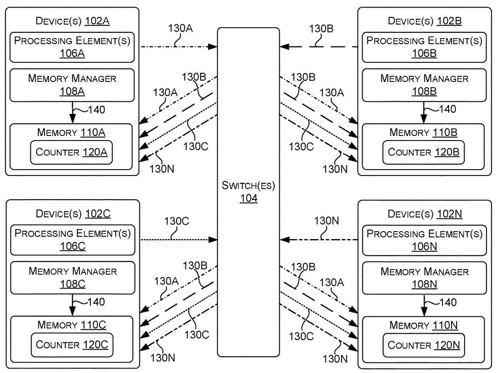
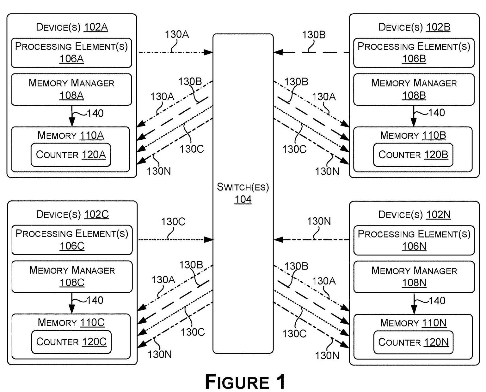
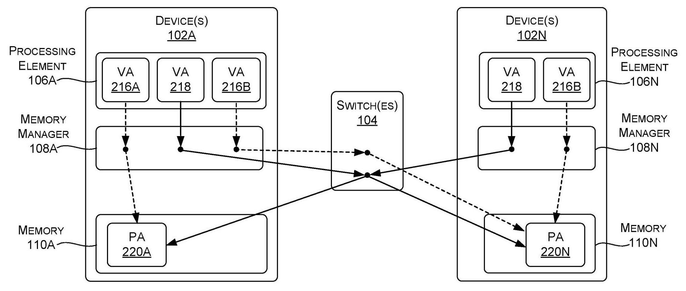
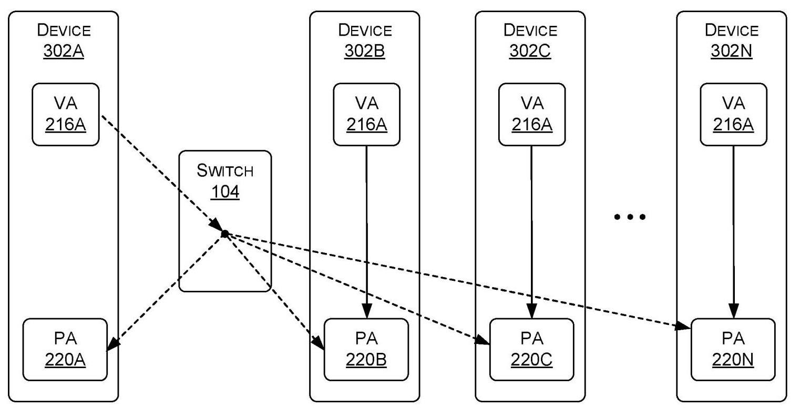
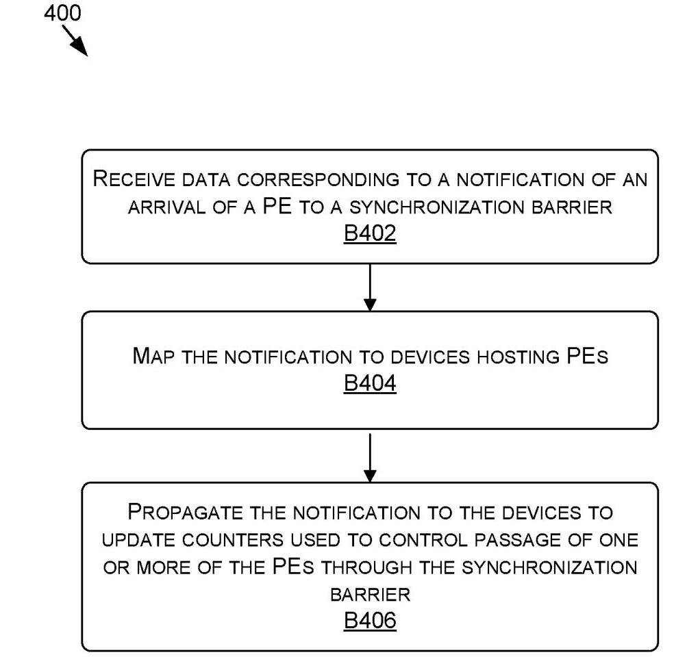
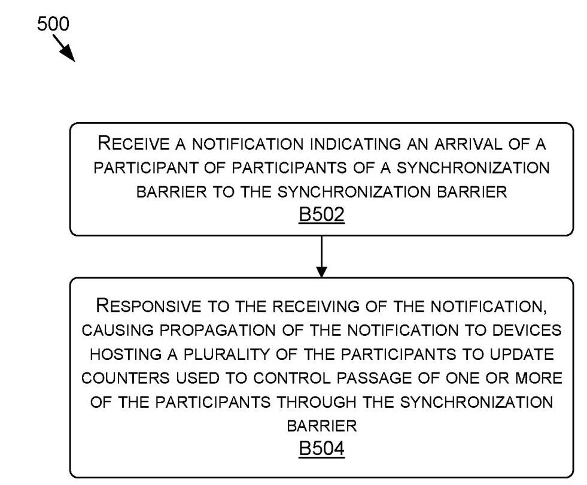
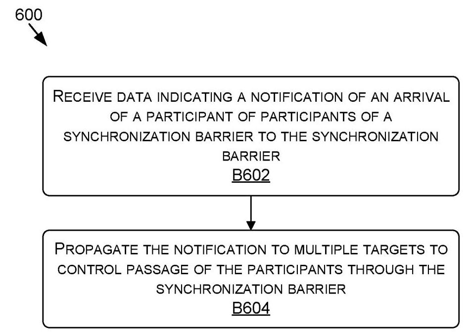
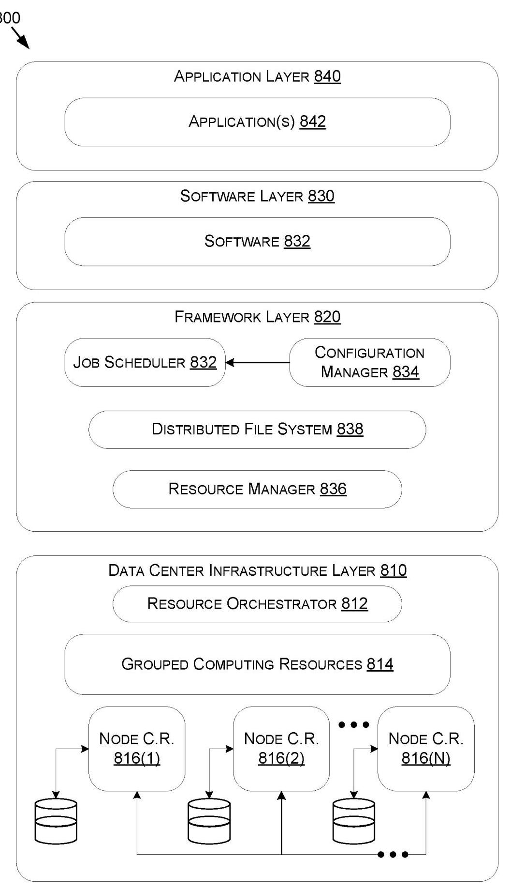

Translated
(19) United States
(19) 美国
(12) Patent Application Publication (10) Pub. No.: US 2023/0229524 A1 Dearth et al. (43) Pub. Date: Jul. 20, 2023
(12) 专利申请公开 (10) 公开号：US 2023/0229524 A1 Dearth 等 (43) 公开日期：2023年7月20日
(54) EFFICIENT MULTI-DEVICE SYNCHRONIZATION BARRIERS USING MULTICASTING
(54) 利用多播实现高效多设备同步屏障
(71) Applicant: NVIDIA Corporation, Santa Clara, CA (US)
(71) 申请人：英伟达公司，美国加利福尼亚州圣克拉拉
(72) Inventors: Glenn Alan Dearth, Groton, MA (US); Mark Hummel, Franklin, MA (US); Daniel Joseph Lustig, Somerville, MA (US)
(72) 发明人：格伦·艾伦·迪尔思 (Glenn Alan Dearth)，马萨诸塞州格罗顿 (US)；马克·胡默尔 (Mark Hummel)，马萨诸塞州富兰克林 (US)；丹尼尔·约瑟夫·卢斯蒂格 (Daniel Joseph Lustig)，马萨诸塞州萨默维尔 (US)
(21) Appl. No.: 17/578,255
(21) Appl. No.: 17/578,255
本专利申请提出了一种利用硬件多播实现高效多设备同步屏障的方法。核心问题在于，传统的屏障实现会引入延迟，因为单个设备先轮询全局计数器，然后再单独通知其他参与者。所公开的方法则采用多播单个通知——例如原子内存操作——从已到达屏障的处理单元（如流式多处理器）发送到所有参与设备。每个设备维护一个本地计数器，在收到此类通知时进行原子更新。通过本地轮询自己的计数器，处理单元可以独立判断何时所有参与者都已到达屏障，并立即继续后续工作，而无需等待中央协调器或单独的标志写入。
关键贡献包括使用感知多播的内存系统，其中单个虚拟地址可以映射到跨设备的多个物理地址，从而使单个屏障到达通知能并发更新所有相关计数器。说明书详述了转译后备缓冲区、交换机和内存管理单元如何协作执行多播，并描述了如何通过对访问权限和路由路径施加约束，在透明提升性能的同时保留用户熟悉的单播编程模型。主要发现是，与传统方法相比，这种硬件多播屏障同步显著降低了同步延迟，因为每个设备一旦其本地计数器反映出全部到达，便可通过屏障继续执行，无需额外的消息传递。
(22) Filed: Jan. 18, 2022
(22) 申请日：2022年1月18日
Publication Classification
公开分类
(51) Int. Cl.
(51) 国际专利分类
G06F 9/52 (2006.01)
G06F 9/52 (2006.01)
G06F 9/48 (2006.01)
G06F 9/48 (2006.01)
G06F 9/30 (2006.01)
G06F 9/30 (2006.01)
(52) U.S. Cl.
(52) U.S. Cl.
CPC ............ G06F 9/522 (2013.01); G06F 9/4881 (2013.01); G06F 9/3004 (2013.01)
CPC ............ G06F 9/522 (2013.01); G06F 9/4881 (2013.01); G06F 9/3004 (2013.01)
ABSTRACT
本专利申请提出了一种利用硬件多播技术实现高效多设备同步屏障的方法。核心问题在于，传统屏障实现会引入延迟，因为单个设备需轮询全局计数器，随后再分别通知其他参与者。本公开方案改为，将一个已到达屏障的处理单元（例如流多处理器）发出的单条通知——如原子内存操作——多播给所有参与设备。每个设备维护一个本地计数器，在收到此类通知时进行原子更新。通过本地轮询自己的计数器，处理单元可以独立判断所有参与者何时均已到达屏障，并立即继续后续工作，无需等待中央协调器或单独的标志写入。
关键贡献包括使用多播感知的内存系统，其中单个虚拟地址可映射到跨设备的多个物理地址，使单条屏障到达通知能并发更新所有相关计数器。说明书详细阐述了翻译后备缓冲器、交换机和内存管理单元如何协同执行多播，并描述了访问权限和路由路径上的约束如何在透明提升性能的同时，保留用户熟悉的单播编程模型。主要发现是，与传统方法相比，这种硬件多播屏障同步显著降低了同步延迟，因为每个设备一旦其本地计数器反映全部到达，即可越过屏障继续执行，无需额外的消息传递。
In various examples, a single notification (e.g., a request for a memory access operation) that a processing element (PE) has reached a synchronization barrier may be propagated to multiple physical addresses (PAs) and/or devices associated with multiple processing elements. Thus, the notification may allow an indication that the processing element has reached the synchronization barrier to be recoded at multiple targets. Each notification may access the PAs of each PE and/or device of a barrier group to update a corresponding counter. The PEs and/or devices may poll or otherwise use the counter to determine when each PE of the group has reached the synchronization barrier. When a corresponding counter indicates synchronization at the synchronization barrier, a PE may proceed with performing a compute task asynchronously with one or more other PEs until a subsequent synchronization barrier may be reached.
在多种示例中，一个指示处理元件（PE）已达到同步屏障的单一通知（例如，内存访问操作请求）可被传播至多个物理地址（PA）和/或关联多个处理元件的设备。由此，该通知可使得处理元件到达同步屏障的指示被记录在多个目标处。每个通知可访问屏障组内各PE和/或设备的PA，以更新相应的计数器。这些PE和/或设备可轮询或以其他方式使用该计数器，来判断组内每个PE何时均已到达同步屏障。当相应的计数器指示在同步屏障处达成同步时，PE可与其他一个或多个PE异步地继续执行计算任务，直至到达下一个同步屏障。


Z JUNDIJ
Z. 容迪杰

E FUNDI-
E FUNDI-


Figure 4

FIGURE 5

FIGURE 6

Figure 7

Figure 8
图8
EFFICIENT MULTI-DEVICE SYNCHRONIZATION BARRIERS USING MULTICASTING
BACKGROUND
[0001] Computing processes may leverage multiple processing elements, such as streaming multiprocessors (SMs) of graphics processing units (GPUs), to perform processing operations in parallel. In parallel computing, a synchronization barrier may be used to synchronize processing by enabling processing elements to, after completing respective compute tasks, wait at the synchronization barrier until all of the processing elements have reached a particular point of execution before any processing element continues along an execution path. When all of the processing elements reach the synchronization barrier, the processing elements may proceed with additional respective compute tasks until another synchronization barrier is reached or processing completes.
[0001] 计算过程可以利用多个处理单元，例如图形处理单元（GPU）的流式多处理器（SM），来并行执行处理操作。在并行计算中，同步屏障可用于同步处理：它使处理单元在完成各自的计算任务后，在同步屏障处等待，直到所有处理单元都到达特定的执行点，任何处理单元才继续沿执行路径前行。当所有处理单元都到达同步屏障后，处理单元可以继续执行各自的其他计算任务，直到遇到另一个同步屏障或处理完成。
[0002] In a conventional approach to implementing a synchronization barrier, SMs that are to wait at the synchronization barrier are distributed across multiple GPUs, where one of the GPUs is used to store a counter in memory. When an SM arrives at the synchronization barrier, the SM sends a read operation to the GPU storing the counter to increment the counter. The GPU polls the memory until the counter indicates that all SMs have arrived at the synchronization barrier. The device then sends write operations, one to each other GPU participating in the synchronization barrier, to change the value of a flag at the device. The other GPUs each locally poll memory to detect whether the flag is set, which indicates to the GPU that the synchronization barrier has been reached by each GPU and additional compute may be performed. However, this approach may include delay after the synchronization barrier is reached by each GPU, as the other GPUs must wait for the flag to be set by the GPU polling the counter prior to proceeding with compute tasks.
[0002] 在实现同步屏障的常规方法中，需要等待在同步屏障处的流式多处理器（SM）分布在多个GPU上，其中某一个GPU用于在内存中存储计数器。当某个SM到达同步屏障时，该SM会向存储计数器的GPU发送读操作，以递增计数器的值。该GPU会轮询内存，直到计数器表明所有SM均已抵达同步屏障。随后，该设备会向参与此同步屏障的其他每一个GPU发送写操作，以修改对应设备上某个标志的值。其他GPU各自在本地轮询内存，检测该标志是否已被置位——这表明每个GPU均已抵达同步屏障，可以执行更多计算任务。然而，这种方法可能会在每个GPU都到达同步屏障之后引入延迟，因为其他GPU必须等待那个轮询计数器的GPU完成标志置位，才能继续进行计算任务。
SUMMARY
[0003] Embodiments of the present disclosure relate to efficient multi-device synchronization barriers using multicasting. Systems and methods are disclosed that provide for multicasting notifications of processing elements reaching a synchronization barrier to multiple processing elements. Disclosed approaches may allow for processing elements to locally track and determine whether each processing element has reached the synchronization barrier.
本公开的实施例涉及使用多播的高效多设备同步屏障。公开了将处理元件到达同步屏障的通知多播到多个处理元件的系统和方法。所公开的方法可以允许处理元件在本地跟踪并确定每个处理元件是否已经到达同步屏障。
[0004] In contrast to conventional approaches, such as those described above, barrier synchronization may support multicasting where a single notification (e.g., a request for a memory access operation) that a processing element (PE) has reached a synchronization barrier may be propagated to multiple physical addresses (PAs) and/or devices associated with multiple processing elements (e.g., corresponding to respective local memory). Thus, the notification may allow an indication that the processing element has reached the synchronization barrier to be recorded at multiple targets. In at least one embodiment, each notification may access the PAs of each PE and/or device of a barrier group to update a corresponding counter. The PEs and/or devices may poll or otherwise use the counter to determine when each PE of the group has reached the synchronization barrier. When a corresponding counter indicates synchronization at the synchronization barrier, a PE may proceed with performing a compute task asynchronously with one or more other PEs until a subsequent synchronization barrier may be reached.
[0004] 与传统方法（例如上述方法）不同，屏障同步可支持多播，其中单一通知（例如，内存访问操作请求）表明处理单元（PE）已到达同步屏障，该通知可被传播至多个物理地址（PA）和/或与多个处理单元相关联的设备（例如，对应于各自的本地内存）。因此，该通知可使得处理单元已到达同步屏障的指示被记录在多个目标上。在至少一个实施例中，每个通知可访问屏障组中每个PE和/或设备的PA以更新对应的计数器。PE和/或设备可轮询或以其他方式使用计数器来确定组中的每个PE何时已到达同步屏障。当对应的计数器指示已在同步屏障处完成同步时，PE可异步地与一个或多个其他PE继续执行计算任务，直到可能到达后续的同步屏障。
BRIEF DESCRIPTION OF THE DRAWINGS
[0005] The present systems and methods for efficient multi-device synchronization barriers using multicasting are described in detail below with reference to the attached drawing figures, wherein:
[0005] 下面参照附图详细描述本发明的用于利用多播实现高效多设备同步屏障的系统和方法，其中：
[0006] FIG. 1 is a diagram illustrating an example of using multicasting for barrier synchronization in a collaborative processing environment, in accordance with some embodiments of the present disclosure;
[0006] 图1是示出根据本公开一些实施例的在协作处理环境中使用多播进行屏障同步的示例的图示；
[0007] FIG. 2 is a diagram illustrating examples of translation paths of a memory system implementing separate memory spaces for unicasting and multicasting in a collaborative processing environment, in accordance with some embodiments of the present disclosure;
[0007] 图2是示出根据本公开一些实施例的、在协作处理环境中为实现单播和多播的独立存储空间而配置的存储器系统的转换路径示例的图示；
[0008] FIG. 3 is a diagram illustrating examples of translation paths of a memory system implementing multicasting using constraints in a collaborative processing environment, in accordance with some embodiments of the present disclosure;
[0008] 图3是示出根据本公开的一些实施例的、在协作处理环境中使用约束实现多播的存储器系统的转换路径的示例的图示；
[0009] FIG. 4 is a flow diagram showing a method a switch may use to implement a synchronization barrier, in accordance with some embodiments of the present disclosure;
[0009] 图4是示出根据本公开的一些实施例的交换机可用来实现同步屏障的方法的流程图；
[0010] FIG. 5 is a flow diagram showing a method a memory manager may use to implement a synchronization barrier, in accordance with some embodiments of the present disclosure;
[0010] 图5是示出根据本公开一些实施例的、存储管理器可用于实现同步屏障的方法的流程图；
[0011] FIG. 6 is a flow diagram showing a method one or more devices may use to implement a synchronization barrier, in accordance with some embodiments of the present disclosure;
[0011] 图6是示出根据本公开的一些实施例的一个或多个设备可用来实现同步屏障的方法的流程图；
[0012] FIG. 7 is a block diagram of an example computing device suitable for use in implementing some embodiments of the present disclosure; and
[0012] 图7是适于实施本公开一些实施例的示例计算设备的框图；并且
[0013] FIG. 8 is a block diagram of an example data center suitable for use in implementing some embodiments of the present disclosure.
[0013] 图8是适用于实施本公开的一些实施例的示例数据中心的框图。
DETAILED DESCRIPTION
[0014] Embodiments of the present disclosure relate to efficient multi-device synchronization barriers using multicasting. Systems and methods are disclosed that provide for multicasting notifications of processing elements reaching a synchronization barrier to multiple processing elements. Disclosed approaches may allow for processing elements to locally track and determine whether each processing element has reached the synchronization barrier.
[0014] 本公开的实施例涉及利用多播的高效多设备同步屏障。公开了用于将处理单元到达同步屏障的通知多播给多个处理单元的系统和方法。所公开的方法可允许处理单元在本地跟踪并确定每个处理单元是否已到达该同步屏障。
[0015] The present disclosure provides for, in part, barrier synchronization that may support multicasting where a single notification (e.g., a request for a memory access operation) that a processing element (PE) has reached a synchronization barrier (also referred to herein as a "barrier") may be propagated to multiple physical addresses (PAs) and/or devices associated with multiple processing elements (e.g., corresponding to respective local memory). Thus, the notification may allow an indication that the processing element has reached the synchronization barrier to be recorded at multiple targets. In at least one embodiment, each notification may access the PAs of each PE and/or device of a barrier group to update a corresponding counter. The PEs and/or devices may poll or otherwise use the counter to determine when each PE of the group has reached the synchronization barrier. When a corresponding counter indicates synchronization at the synchronization barrier, a PE may proceed with performing a compute task asynchronously with one or more other PEs until a subsequent synchronization barrier may be reached.
[0015] 本公开部分地提供了一种可支持多播的屏障同步，其中，指示处理单元（PE）已到达同步屏障（本文中也称为“屏障”）的单个通知（例如，对存储器访问操作的请求）可被传播至与多个处理单元相关联的多个物理地址（PA）和/或设备（例如，对应于各自的本地存储器）。由此，该通知可允许将处理单元已到达同步屏障的指示记录在多个目标处。在至少一个实施例中，每个通知可访问屏障组中每个PE和/或设备的PA，以更新对应的计数器。这些PE和/或设备可轮询或以其他方式使用该计数器，以确定该组中的每个PE何时已到达同步屏障。当对应的计数器指示在同步屏障处已同步时，PE可继续执行计算任务，并与一个或多个其他PE异步地执行，直到可能到达后续的同步屏障。
[0016] With reference to FIG. 1, FIG. 1 is a diagram illustrating an example of using multicasting for barrier synchronization in a collaborative processing environment 100, in accordance with some embodiments of the present disclosure.
[0016] 参照图1，图1是图示根据本公开一些实施例的协作处理环境100中使用多播进行屏障同步的示例的示意图。
[0017] It should be understood that this and other arrangements described herein are set forth only as examples. Other arrangements and elements (e.g., machines, interfaces, functions, orders, groupings of functions, etc.) may be used in addition to or instead of those shown, and some elements may be omitted altogether. Further, many of the elements described herein are functional entities that may be implemented as discrete or distributed components or in conjunction with other components, and in any suitable combination and location. Various functions described herein as being performed by entities may be carried out by hardware, firmware, and/or software. For instance, various functions may be carried out by a processor executing instructions stored in memory. In some embodiments, the systems, methods, and processes described herein may be executed using similar components, features, and/or functionality to those of any number of instances of example computing device 700 of FIG. 7, and/or example data center 800 of FIG. 8.
[0017] 应当理解，本文所述的本方案和其他方案仅作为示例给出。也可以采用其他方案和元素（例如，机器、接口、功能、顺序、功能分组等）作为补充或替代，而某些元素可以完全省略。此外，本文描述的许多元素是功能实体，其可以实现为分立或分布式组件，或者与其他组件结合，并位于任何合适的组合和位置中。本文描述为由实体执行的各种功能可以通过硬件、固件和/或软件来执行。例如，各种功能可以由处理器执行存储在存储器中的指令来实现。在一些实施例中，本文描述的系统、方法和过程可以使用与图7的示例计算设备700和/或图8的示例数据中心800的任意数量的实例类似的组件、特征和/或功能来执行。
[0018] The collaborative processing environment 100 may include one or more devices, such as devices 102A, 102B, and 102C though device 102N (also referred to herein as "devices 102"). The collaborative processing environment 100 may also include one or more switches, such as a switch 104. The collaborative processing environment 100 may further include one or more processing elements, such as processing elements 106A, 106B, and 106C through 106N (also referred to herein as "processing elements 106"). The collaborative processing environment 100 may further include one or more memory managers, such as memory managers 108A, 108B, and 108C through 108N (also referred to herein as "memory managers 108"). Also, the collaborative processing environment 100 may include one or more memories, such as memories 110A, 110B, and 110C through 110N (also referred to herein as "memories 110"). [0019] By way of example and not limitation, the device (s) 102A includes the processing element(s) 106A, the memory manager 108A, and the memory 110A, the device (s) \({102}\mathrm{\;B}\) includes the processing element(s) \({106}\mathrm{\;B}\) , the memory manager 108B, and the memory 110B, the device (s) \({102}\mathrm{C}\) includes the processing element(s) \({106}\mathrm{C}\) , the memory manager 108C, and the memory \({110}\mathrm{C}\) , and the device(s) 102N includes the processing element(s) 106N, the memory manager 108N, and the memory 110N. Although a single processing element 106 is shown within each device 102, a device 102 may include any number of processing elements 106, such as tens to hundreds or more. Other devices included in the devices 102, when present, may include similar corresponding components.
[0018] 协作处理环境100可包括一个或多个设备，例如设备102A、102B和102C直至设备102N（本文中也称为“设备102”）。协作处理环境100也可包括一个或多个交换机，例如交换机104。协作处理环境100可进一步包括一个或多个处理元件，例如处理元件106A、106B和106C直至106N（本文中也称为“处理元件106”）。协作处理环境100可进一步包括一个或多个内存管理器，例如内存管理器108A、108B和108C直至108N（本文中也称为“内存管理器108”）。此外，协作处理环境100可包括一个或多个内存，例如内存110A、110B和110C直至110N（本文中也称为“内存110”）。[0019] 以示例而非限制的方式，设备102A包括处理元件106A、内存管理器108A和内存110A，设备\({102}\mathrm{\;B}\)包括处理元件\({106}\mathrm{\;B}\)、内存管理器108B和内存110B，设备\({102}\mathrm{C}\)包括处理元件\({106}\mathrm{C}\)、内存管理器108C和内存\({110}\mathrm{C}\)，设备102N包括处理元件106N、内存管理器108N和内存110N。尽管每个设备102中示出了单个处理元件106，但一个设备102可包括任意数量的处理元件106，例如数十至数百或更多。设备102中包含的其他设备（当存在时）可包括类似的对应组件。
[0020] Examples of a device 102 includes a GPU, a CPU, a logic unit (e.g., the logic unit 720), an integrated circuit, and/or a combination of one or more thereof. The switch 104 may generally correspond to a coherent fabric interconnecting the devices 102, the processing elements 106, the memory managers 108, and/or the memories 110. In embodiments, the switch 104 may enable parallel or otherwise coordinated processing amongst the devices 102 and/or the processing elements 106. In at least one embodiment, the switch 104 provides a direct device-to-device interconnect or network between the devices 102. The switch 104 may allow transmissions from any number of the devices 102 and/or components thereof to be routed to any of the other devices 102.
[0020] 设备102的示例包括GPU、CPU、逻辑单元（例如逻辑单元720）、集成电路，和/或其中一种或多种的组合。开关104通常可对应于将设备102、处理元件106、存储管理器108和/或存储器110互连的相干结构。在实施例中，开关104可使得设备102和/或处理元件106之间能够进行并行或其他形式的协调处理。在至少一个实施例中，开关104在设备102之间提供直接的设备到设备互连或网络。开关104可允许来自任意数量的设备102和/或其组件的传输被路由到任何其他设备102。
[0021] Although the switch 104 is shown as being external to the devices 102 (e.g., on a separate device or integrated circuit), in at least one embodiment, one or more portions of the switch 104 and/or the functionality thereof may be incorporated into one or more of the devices 102. Further, although one switch 104 is shown, the switch 104 may represent any number of switches connecting the devices 102 in any suitable topology. When multiple switches are provided, different switches may form different multicast and/or barrier groups of devices 102, as described herein. Multicast and/or barrier groups may have hierarchical relationships where a barrier of a sub-group to a group may be treated as a barrier of an individual device or node within the group.
[0021] 尽管交换机104被示为位于设备102外部（例如，在单独的器件或集成电路上），但在至少一个实施例中，交换机104的一个或多个部分和/或其功能可被并入一个或多个设备102中。此外，虽然图中示出了一个交换机104，但交换机104可表示以任意合适拓扑连接设备102的任意数量的交换机。当提供多个交换机时，不同的交换机可以如本文所述形成设备102的不同多播和/或屏障组。多播和/或屏障组可具有层次关系，其中子组对组的屏障可被视为该组内单个设备或节点的屏障。
[0022] Examples of the processing elements 106 include one or more streaming multiprocessors (SMs), single instruction, multiple data (SIMD) units, cores, such as CPU cores, multithreaded processing units, parallel processing units, threads, thread groups, etc. In at least one embodiment, a processing element 106 may be configured to execute one or more thread blocks and/or thread groups in parallel.
[0022] 处理元件106的示例包括一个或多个流多处理器（SMs）、单指令多数据（SIMD）单元、核心（例如CPU核心）、多线程处理单元、并行处理单元、线程、线程组等。在至少一个实施例中，处理元件106可被配置为并行执行一个或多个线程块和/或线程组。
[0023] In one or more embodiments, each device 102 has its own memory 110 (physical memory such as random access memory) which may be implemented using its own memory system and memory bus. The memory managers 108 and/or switches 104 may be used to effectively extend the memory buses to one or more other devices 102. In other examples, one or more of the devices 102 may share at least some of the memory 110, memory system, and/or memory bus. As shown, the memories 110 may be used to store counters 102A, 102B, and 102C through 102N (also referred to herein as "counters 120"), which may be used by corresponding processing elements 106 and/or devices 102 to track or determine how many of the processing elements 106 have reached a barrier.
[0023] 在一个或多个实施例中，每个设备102拥有自己的内存110（诸如随机存取存储器之类的物理内存），其可以使用自己的内存系统和内存总线实现。内存管理器108和/或交换机104可以用于有效地将内存总线扩展到一个或多个其他设备102。在其他示例中，一个或多个设备102可以共享至少部分内存110、内存系统和/或内存总线。如图所示，存储器110可以用于存储计数器102A、102B、102C至102N（本文中也称为“计数器120”），这些计数器可由对应的处理单元106和/或设备102用来跟踪或确定有多少处理单元106已到达屏障。
[0024] Examples of the memory managers 108 include one or more memory controllers, such as a memory chip controller (MCC), a memory controller unit (MCU), and/or a memory management unit (MMU), such as a GPU MMU (GMMU), a paged MMU (PMMU), etc.
[0024] 存储器管理器108的示例包括一个或多个存储器控制器，例如内存芯片控制器（MCC）、存储器控制器单元（MCU）和/或存储器管理单元（MMU），例如GPU MMU（GMMU）、分页MMU（PMMU）等。
[0025] One or more of the processing elements 106, the devices 102, and/or threads thereof may leverage the collaborative processing environment 100 in order to perform synchronized processing, which may include processing operations in parallel. For example, any combination of the components may be member or node of a barrier group that leverages one or more barriers in order to synchronize the processing. FIG. 1 provides an example where the processing elements 106A, 106B, 106C, and 106N are members or nodes of a barrier group, although a barrier group may be configured differently in other examples, such as by including more or fewer processing elements 106. Additionally, while a processing element 106 may be referred to as a member of a barrier group, not all threads corresponding to the processing element 106 need be a member of the barrier group.
[0025] 一个或多个处理元件106、设备102和/或其线程可利用协作处理环境100来执行同步处理，其中可包括并行处理操作。例如，各组件的任意组合可作为屏障组的成员或节点，利用一个或多个屏障来同步处理。图1示出了一个示例，其中处理元件106A、106B、106C和106N是某个屏障组的成员或节点，但其他示例中屏障组的配置可能不同，例如包含更多或更少的处理元件106。此外，虽然处理元件106可被称为屏障组的成员，但该处理元件106对应的所有线程并非都必须属于该屏障组。
[0026] The barrier group may use a barrier to enable the processing elements 106 thereof to, after completing respective compute tasks, wait at the barrier until all of the members have reached a particular point of execution before any member continues along an execution path. When all of the members reach the barrier, the members may proceed with additional respective compute tasks if available. This process may continue if there are subsequent barriers present for the barrier group. Additionally, one or more of the processing elements 106 may be a member of multiple barrier groups, which may include different members. In some examples, the same execution path for a processing element 106 (and/or thread) may include multiple barriers for different barrier groups.
[0026] 该屏障组可以使用屏障，使其中的处理元件106在完成各自的计算任务后，在屏障处等待，直到所有成员都到达了特定的执行点，然后任何成员才继续沿着执行路径前进。当所有成员都到达屏障后，如果有额外的各计算任务可用，成员便可以继续执行。如果该屏障组后续还存在屏障，这一过程可以继续。此外，一个或多个处理元件106可以是多个屏障组的成员，这些屏障组可能包含不同的成员。在一些示例中，同一个处理元件106（和/或线程）的同一执行路径可能包含针对不同屏障组的多个屏障。
[0027] Disclosed approaches may be used for any suitable compute tasks that may leverage a barrier. By way of example and not limitation, the processing elements 106 may each perform a compute task and share information amongst themselves. This process may be repeated any number of times. Each time a barrier may be used so that when the information is shared (e.g., each processing element reads each other's values or puts them in a central place), the processing elements may be synchronized. For example, without the barrier one or more buffers may be overwritten by one or more processing elements 106 while still in use or one or more processing elements 106 may process a buffer of another processing element 106 before the buffer includes an updated value.
[0027] 所公开的方法可用于任何可以利用屏障的合适的计算任务。作为示例而非限制，处理元件106可以各自执行计算任务并在它们之间共享信息。此过程可以重复任意次数。每次都可以使用屏障，以便当信息被共享时（例如，每个处理元件读取彼此的值或将它们放在中央位置），处理元件可以被同步。例如，在没有屏障的情况下，一个或多个缓冲区可能仍在使用时就被一个或多个处理元件106覆盖，或者一个或多个处理元件106可能在缓冲区包含更新值之前处理另一处理元件106的缓冲区。
[0028] In at least one embodiment, the processing elements 106 of a barrier group may be initialized prior to arrival at a corresponding barrier. By way of example, and not limitation, the processing elements 106 may be running one or more processes running on the devices 102 (e.g., on one or more threads thereof) running one or more applications. One or more portions of initialization may occur at or in response to launching at least one of the processes and/or applications (e.g., comprising the execution paths implementing one or more barriers). For example, one or more portions of initialization may occur in response to and/or as part of launching a program (e.g., a multiprocessor program) that is run using the processing elements 106. In one or more embodiments, one or more portions of information used for initialization may be passed into the kernel that is launched (e.g., so that it is available when the process starts). Additionally or alternatively, one or more portions of initialization may occur in response to and/or as part of creating a thread group after launching the program. For example, during run-time the processing elements106may coordinate to create a thread group causing the threshold group to be created in software and information used for initialization to be made available to the processing elements 106 for implementing the barrier.
[0028] 在至少一个实施例中，屏障组的处理元件106可在到达相应屏障之前进行初始化。作为示例而非限制，处理元件106可能正在运行一个或多个进程，这些进程在设备102上运行（例如，在其一个或多个线程上），并运行一个或多个应用程序。初始化的一个或多个部分可在启动至少一个所述进程和/或应用程序（例如，包括实现一个或多个屏障的执行路径）时或响应于所述启动而发生。例如，初始化的一个或多个部分可响应于和/或作为启动程序（例如，多处理器程序）的一部分而发生，该程序使用处理元件106来运行。在一个或多个实施例中，用于初始化的一个或多个信息部分可被传递到所启动的内核中（例如，以便在进程启动时可用）。附加地或替代地，初始化的一个或多个部分可响应于和/或作为启动程序后创建线程组的一部分而发生。例如，在运行时，处理元件106可协调以创建线程组，从而导致所述阈值组在软件中被创建，并且用于初始化的信息可被提供给处理元件106以实施该屏障。
[0029] Initialization may include, for example, recording, providing, or otherwise making available the information used for implementing one or more barriers. Non-limiting examples include data indicating and/or specifying a quantity of the devices 102 and/or the processing elements 106 participating in a barrier and/or barrier group (which may correspond to multiple barriers), data initializing or otherwise defining values stored in the counters 120, data initializing or otherwise defining values used to increment the counters 120, data initializing or otherwise defining values used to determine whether a barrier has been reached by each member of the barrier group, and/or data initializing, allocating, or otherwise defining a multicast group for a barrier group, memory for PAs used for the counters 120, mappings between VAs and PAs, etc.
[0029] 初始化例如可包括记录、提供或以其他方式使得用于实现一个或多个屏障的信息可用。非限制性示例包括：指示和/或指定参与屏障和/或屏障组（可能对应多个屏障）的设备102和/或处理元件106的数量的数据，初始化或以其他方式定义计数器120中所存储的值的数据，初始化或以其他方式定义用于递增计数器120的值的数据，初始化或以其他方式定义用于确定屏障组的每个成员是否已到达屏障的值的数据，和/或为屏障组初始化、分配或以其他方式定义多播组的数据、用于计数器120的物理地址的存储器、虚拟地址与物理地址之间的映射等。
[0030] In one or more embodiments, when each processing element 106 (e.g., an SM) of a barrier group reaches a barrier of the barrier group, the processing element 106 may provide a notification or other indication to each other processing element 106, corresponding device 102 or memory 110, and/or other target of the barrier group. For example, the processing element 106 may, based at least on completing a compute task corresponding to the barrier, transmit a notification to the switch(es) 104. The switch 104 may then forward or otherwise provide the notification to all targets associated with the barrier group using multicasting, causing a counter 120 corresponding to the target to be incremented. In one or more embodiments, the notification may include an indication of the targets, which the switch 104 may use to determine the targets or otherwise forward or provide the notification to the targets. Thus, a single notification may cause all of the counters 120 to be incremented. However, the time at which the counters 120 are incremented may vary based on differences in latency and bandwidth between links.
[0030] 在一个或多个实施例中，当屏障组的每个处理元件106（例如，SM）到达该屏障组的一个屏障时，该处理元件106可以向该屏障组的每个其他处理元件106、对应的设备102或存储器110和/或其他目标提供通知或其他指示。例如，处理元件106可以至少基于完成与该屏障对应的计算任务，向交换机104发送通知。然后，交换机104可以使用多播将该通知转发或以其他方式提供给与屏障组相关联的所有目标，使得与目标对应的计数器120递增。在一个或多个实施例中，该通知可以包括目标的指示，交换机104可以使用该指示来确定目标或以其他方式将通知转发或提供给目标。因此，单个通知可以使所有计数器120递增。然而，计数器120递增的时间可能因链路之间的延迟和带宽差异而有所不同。
[0031] FIG. 1 shows examples of notifications 130A, 130B, and 130C through 130N (also referred to herein as "notifications 130") which may be provided by the members of the barrier group. For example, the processing element 106A may provide the notification 130A, the processing element 106B may provide the notification 130B, the processing element 106C may provide the notification 130C, and the processing element 106N may provide the notification 13 0N.
[0031] 图1示出了可由屏障组成员提供的通知130A、130B、130C至130N（本文亦统称为“通知130”）的示例。例如，处理元件106A可提供通知130A，处理元件106B可提供通知130B，处理元件106C可提供通知130C，处理元件106N可提供通知130N。
[0032] In at least one embodiment, a notification may include a request for a request for one or more memory access operations. Examples of requests (memory access requests) for memory access operations include those for loads, stores, reductions, and/or atomics, which may be sent out to the memory system, with the memory system optionally returning back one or more values in response (e.g., to the requestor). FIGS. 2 and 3 are used to provide nonlimiting examples of how requests may be implemented in one or more embodiments. However, other approaches may be used.
[0032] 在至少一个实施例中，通知可以包括对一个或多个内存访问操作的请求。内存访问操作请求（内存访问请求）的示例包括加载、存储、归约和/或原子操作的请求，这些请求可以发送到内存系统，内存系统可选地返回一个或多个值作为响应（例如，给请求者）。图2和图3用于提供关于在一个或多个实施例中如何实现请求的非限制性示例。然而，也可以使用其他方法。
[0033] In one or more embodiments, each notification may trigger and/or include a request for one or more memory access operations. The memory access operations may, for example, comprise atomic operations such that they are uninterruptable. In at least one embodiment, each notification may correspond to one or more reduction operations (including a read, a modify, and a write), such as an atomic reduction add operation. For example, a processing element 106 may issue an atomic reduction add operation (e.g., a reduce multicast operation) to the switch 104. The switch 104 may use multicasting to forward the operation to all targets, where an atomic operation may be performed on each physical address of a multicast group without returning a response. For example, an operation on a physical address may include or indicate ones or more values (which may have been included in the request) added to one or more values stored at the physical address(es) corresponding to the counter 120. Where a distributed multicast hierarchy is employed, the switch 104 may collect responses at each stage.
[0033] 在一个或多个实施例中，每个通知可触发和/或包括一个或多个内存访问操作的请求。这些内存访问操作例如可包括原子操作，使得它们不可中断。在至少一个实施例中，每个通知可对应于一个或多个归约操作（包括读取、修改和写入），例如原子归约加操作。例如，处理元件106可向交换器104发出原子归约加操作（例如，归约多播操作）。交换器104可使用多播将该操作转发至所有目标，其中可在多播组的每个物理地址上执行原子操作而不返回响应。例如，对物理地址的操作可包括或指示一个或多个值（可能已包含在请求中），这些值被加到对应于计数器120的物理地址处存储的一个或多个值上。在采用分布式多播层级结构的情况下，交换器104可在每一级收集响应。
[0034] When a counter 120 used by a processing element 106 has been incremented in response to notifications from each participant in a barrier, indicating arrival of each participant to the barrier, the processing element 106 may proceed past the barrier, which may include performing an additional compute task. For example, where there are four participants in FIG. 1, for each time the notification 130 is received from the switch 104, the counter 120A may be incremented by 1. Assuming the counter 120A started at 0, the counter 120A having a value of at least 4 may indicate all of the notifications 130A, 130B, 130C, and 130N have been received and used to increment the counter 120A.
[0034] 当处理元件106使用的计数器120因响应来自屏障中每个参与者的通知而被递增时，表明每个参与者已到达屏障，处理元件106可以越过屏障继续执行操作，其中可包括执行额外的计算任务。例如，在图1中存在四个参与者的情况下，每当从交换机104接收到通知130时，计数器120A可递增1。假设计数器120A从0开始，则计数器120A的值至少为4时，可表明所有通知130A、130B、130C和130N均已接收并用于递增计数器120A。
[0035] Thus, the counter 120A may be used to determine whether all participants have reached the barrier and the processing element 106A corresponding to the counter 120A can proceed past the barrier. The counters 120B, 120C, and 120N may similarly be used respectively by the processing elements \(\mathbf{{106B}},\mathbf{{106C}}\) , and \(\mathbf{{106N}}\) to determine whether to proceed past the barrier. While the example of addition has been provided, a counter 120 may be incremented any suitable way so as to indicate arrival at a barrier (e.g., multiplication, subtraction, division, etc.).
[0035] 因此，计数器120A可用于判断所有参与者是否已到达屏障，且与计数器120A对应的处理元件106A可以越过屏障继续执行。计数器120B、120C和120N可类似地分别由处理元件\(\mathbf{{106B}}\)、\(\mathbf{{106C}}\)和\(\mathbf{{106N}}\)用于判断是否越过屏障继续执行。虽然本文提供了加法示例，但计数器120可以任何合适的方式递增以指示到达屏障（例如，乘法、减法、除法等）。
[0036] In one or more embodiments, the device 102 and/or the memory manager 108 associated with (e.g., local to) a processing element 106 may poll 140 or otherwise monitor the counter 120 (e.g., a local replica) in the memory 110 to determine whether the value(s) stored therein indicates the processing element 106 may proceed past the barrier (indicates all participants have at least reached the barrier). In at least one embodiment, local polling may begin based at least on the processing element 106 providing the notification 130. In at least one embodiment, the local polling may end based at least on the device 102 determining the processing element 106 may proceed past the barrier. In the example of adding 1 to the counter 120 for each notification 130 , the device 102 may determine the processing element 106 can proceed past the barrier based at least on determining the value stored in the counter 120 is greater than or equal to 4. [0037] As described herein, the time at which the counters 120 are incremented may vary based on differences in latency and bandwidth between links for different targets. This may result in different counters 120 indicating at different times that all participants have reached the barrier. Thus, by monitoring individual counters 120 for the processing elements 106, different processing elements 106 may proceed past the barrier at different times without having to wait for an indication from another device 102 and/or other potential sources of delay.
[0036] 在一个或多个实施例中，设备102和/或与处理元件106相关联（例如，本地）的存储器管理器108可轮询140或以其他方式监视存储器110中的计数器120（例如，本地副本），以确定其中存储的一个或多个值是否表明该处理元件106可以越过该屏障继续执行（表明所有参与者至少都已到达该屏障）。在至少一个实施例中，本地轮询可至少基于该处理元件106提供了通知130而开始。在至少一个实施例中，本地轮询可至少基于该设备102确定该处理元件106可以越过该屏障而结束。在每收到一个通知130就将计数器120加1的示例中，设备102可至少基于确定该计数器120中存储的值大于或等于4而确定该处理元件106可以越过该屏障继续执行。
[0037] 如本文所述，计数器120被递增的时间可能因不同目标的链路之间的延迟和带宽差异而变化。这可能导致不同计数器120在不同时间指示所有参与者都已到达该屏障。因此，通过监视各处理元件106各自的计数器120，不同处理元件106可在不同时间越过该屏障继续执行，而无需等待来自另一设备102的指示和/或其他潜在的延迟来源。
[0038] In one or more embodiments, a barrier group may participate in a sequence of barriers. Rather than resetting the counters 120 for each barrier, each barrier may correspond to a respective epoch with a corresponding epoch value(s) being used to determine whether each participant has reached the barrier for that epoch. In one or more embodiments the epoch value may correspond to a multiple of the number of participants in the barrier. Continuing the example where a value of at least 4 indicates all 4 participants have arrived at the barrier, a subsequent epoch value may be 8, followed by 12, followed by 16, etc. Allowing a processing element 106 to proceed past a given epoch when a counter 120 is greater than or equal to the corresponding epoch value may allow for other processing elements 106 to complete tasks for a subsequent barrier and send corresponding notifications even where the processing element 106 has not yet verified all processing elements 106 have arrived at the previous barrier.
[0038] 在一个或多个实施例中，一个屏障组可以参与一系列屏障。不需为每个屏障重置计数器120，每个屏障可对应一个带有相应周期值的相应周期，该周期值用于确定每个参与者是否已到达该周期的屏障。在一个或多个实施例中，周期值可对应于屏障中参与者数量的倍数。继续该示例，值至少为4表示所有4个参与者已到达屏障，后续周期值可为8，随后为12，随后为16等。当计数器120大于或等于对应周期值时，允许处理元件106经过给定周期继续前进，即使该处理元件106尚未验证所有处理元件106都已到达前一屏障，其他处理元件106也可以完成后续屏障的任务并发送相应通知。
[0039] In at least one embodiment, each device 102 participating in a barrier maintains a counter (e.g., a 64 bit counter) for each region of memory 110 that is a target of a fabric barrier synchronization. Each device 102 may also locally maintain a next epoch value (which may be a multiple of the number of participants). Using a 64 bit counter 120 may allow software to effectively ignore a counter wrap case. However, there are many different approaches to handing wraparound of the counters 120. For example, a slower software barrier synchronization process may be performed before wraparound happens. Further, the counters 120 may be able to store enough epochs that wraparound can effectively be disregarded. In one or more embodiments, the counters 120 may be analyzed for limit checks. When a counter 120 passes a certain value, a slower counter may be used that also clears out the counters 120 (e.g., to restart at 0). In at least one embodiment, a top bit of the counters 120 may be reserved as an overflow. The device 102 may detect when that bit gets set and takes some action. In one or more embodiments, wraparound handling may be incorporated into an atomic operation being performed to increment the counters 120. For example, the atomic operation could perform the increment and detect a wraparound condition to trigger one or more wraparound handling operations (e.g., setting the counter 120 to a different value). A response may be provided when a wraparound condition is detected so as to cause polling for a different value.
[0039] 在至少一个实施例中，参与屏障的每个设备102为作为结构屏障同步目标的每个存储器110区域维护一个计数器（例如，64位计数器）。每个设备102还可以本地维护一个下一纪元值（该值可能是参与者数量的倍数）。使用64位计数器120可以使软件有效地忽略计数器回绕的情况。然而，处理计数器120的回绕有许多不同的方法。例如，可以在回绕发生之前执行一个更慢的软件屏障同步过程。此外，计数器120可能能够存储足够多的纪元，使得回绕实际上可以忽略。在一个或多个实施例中，可以对计数器120进行分析以进行限值检查。当计数器120超过某个值时，可能会使用一个更慢的计数器，同时清空这些计数器120（例如，重新从0开始）。在至少一个实施例中，计数器120的最高位可被保留作为溢出标志。设备102可以检测到该位被置位并采取相应操作。在一个或多个实施例中，回绕处理可以被整合到为递增计数器120而执行的原子操作中。例如，该原子操作可以执行递增并检测回绕条件，以触发一个或多个回绕处理操作（例如，将计数器120设置为不同的值）。当检测到回绕条件时，可以提供响应，以便轮询不同的值。
[0040] In at least one embodiment, a memory manager 108 may be used to provide a notification from a corresponding processing element 106, which may include the memory manager 108 performing one or more portions of address translation. For example, each memory manager 108 may receive a request from its corresponding processing element 106 indicating one or more VAs, and provide data corresponding to the one or more VAs and/or request to the switch 104 for further processing, which may include initial or further address translation. Examples of requests (memory access requests) for memory access operations include those for loads, stores, and/or atomics, which may be sent out to the memory system, with the memory system optionally returning back one or more values in response.
在至少一个实施例中，内存管理器108可用于从对应的处理单元106提供通知，其中可包括内存管理器108执行地址转换的一个或多个部分。例如，每个内存管理器108可从其对应的处理单元106接收指示一个或多个虚拟地址的请求，并将与所述一个或多个虚拟地址和/或请求对应的数据提供给交换机104以进行进一步处理，其中可能包括初始或进一步的地址转换。针对内存访问操作的请求示例包括加载、存储和/或原子操作的请求，这些请求可被发送至内存系统，且内存系统可选择性地返回一个或多个值作为响应。
[0041] In at least one embodiment, per-process VAs may be translated to PAs and/or intermediate addresses. Further, a memory manager 108 may perform at least some of the address translation. For example, each memory manager 108 may translate a VA to an intermediate address (e.g., a fabric linear address of a global virtual address space into which different processing nodes or elements may uniquely map one or more ranges of local physical memory), which may be used for further translation to one or more PAs. For example, in various embodiments, a switch 104 may receive one or more PAs (e.g., in a request) translated from a VA (e.g., translated by a memory manager 108 providing the one or more PAs), or may receive an intermediate address (e.g., translated by a memory manager 108 providing the intermediate address), which may be forwarded to one or more corresponding devices 102 for further translation. In one or more embodiments a translation lookaside buffer (TLB), such as a link TLB, may be used to translate the intermediate address to a PA. For example, the switch 104 may provide the intermediate address to one or more of the devices 102 for translation to a corresponding PA using a corresponding TLB of the device 102.
在至少一个实施例中，每个进程的虚拟地址（VA）可被转换为物理地址（PA）和/或中间地址。此外，内存管理器108可以执行至少部分地址转换。例如，每个内存管理器108可将一个VA转换为中间地址（例如，全局虚拟地址空间的网络线性地址，不同处理节点或元件可将一个或多个本地物理内存范围唯一映射到该空间中），该中间地址可用于进一步转换为一个或多个PA。例如，在各种实施例中，交换机104可接收从VA转换来的一个或多个PA（例如，由提供该一个或多个PA的内存管理器108转换），或可接收一个中间地址（例如，由提供该中间地址的内存管理器108转换），该中间地址可被转发到一个或多个对应设备102作进一步转换。在一个或多个实施例中，可使用转换后备缓冲器（TLB）——如链路TLB——将中间地址转换为PA。例如，交换机104可将中间地址提供给一个或多个设备102，以便利用设备102中对应的TLB将其转换为对应的PA。
[0042] Referring now to FIG. 2, FIG. 2 is a diagram illustrating examples of translation paths of a memory system implementing separate memory spaces for unicast-ing and multicasting in the collaborative processing environment 100, in accordance with some embodiments of the present disclosure. In at least one embodiment, the memory manager 108 may translate a VA to a PA for unicast memory access (e.g., using the VA 216A), and translate a VA to an intermediate address for multicast memory access (e.g., using the VA 218). While in some examples, a switch 104 does not perform address translation, in other examples a switch 104 may perform at least some of the address translation. For example, a switch 104 may receive a VA (e.g., in a request) and translate the VA to multiple PAs, or may receive an intermediate address (e.g., from a memory manager 108), and translate the intermediate address to multiple PAs.
[0042] 现在参考图2，图2是示出根据本公开一些实施例的在协作处理环境100中实施用于单播和多播的单独存储器空间的存储器系统的转换路径的示例的图。在至少一个实施例中，存储器管理器108可以将VA转换为PA以用于单播存储器访问（例如，使用VA 216A），并且将VA转换为中间地址以用于多播存储器访问（例如，使用VA 218）。虽然在一些示例中，交换机104不执行地址转换，但在其他示例中，交换机104可以执行至少一些地址转换。例如，交换机104可以接收VA（例如，在请求中）并将该VA转换为多个PA，或者可以接收中间地址（例如，来自存储器管理器108），并将该中间地址转换为多个PA。
[0043] As indicated in FIG. 2, in one or more embodiments a processing element 106 may use a VA that is translated to its own PA or a PA of another device 102 for memory access. For example, FIG. 2 shows the processing element 106A may provide a request indicating a VA 216A, which points to a PA 220A of the processing element 106A. FIG. 2 also shows the processing element 106A may provide a request indicating a VA 216B, which points to a PA 220N of the processing element 106N. Further, the processing element \({106}\mathrm{\;N}\) may provide a request indicating the VA 216B, which points to the PA 220N of the processing element 106N. Thus, the same VA may be provided by either device 102 to access the same PA. For example, the requests may be provided by one or more processes running on the devices 102A and 102N (e.g., one or more threads thereof) running one or more applications while sharing memory space.
[0043] 如图2所示，在一个或多个实施例中，处理元件106可使用一虚拟地址（VA），该VA被转换为其自身的物理地址（PA）或另一设备102的PA以进行存储器访问。例如，图2示出处理元件106A可提供指示VA 216A的请求，该VA指向处理元件106A的PA 220A。图2还示出处理元件106A可提供指示VA 216B的请求，该VA指向处理元件106N的PA 220N。此外，处理元件\({106}\mathrm{\;N}\)可提供指示VA 216B的请求，该VA指向处理元件106N的PA 220N。因此，任一设备102均可提供同一VA以访问同一PA。例如，这些请求可由运行在设备102A和102N上的一个或多个进程（例如，其间的一个或多个线程）在共享存储器空间的同时运行一个或多个应用程序而提供。
[0044] The VAs 216A and 216B are examples of unicast VAs. Receiving a unicast VA in a request may indicate to the memory system that the request is for a unicast memory operation in which the VA is translated to a single PA and a corresponding memory access. The memory system may also support multicast VAs. Receiving a multicast VA in a request (e.g., corresponding to a notification of reaching a barrier) may indicate to the memory system that the request is for a multicast memory operation in which the VA is translated to multiple PAs and corresponding memory accesses. For example, a memory manager 108 may be configured to use the VA to determine whether to translate the VA to a PA or an intermediate address, where an intermediate address may indicate multicasting to a switch 104 and a PA may indicate unicasting to the switch 104. For example, FIG. 2 shows the processing element 106A or the processing element 106N may provide a request indicating a VA 218, which points to the PA 220A of the processing element 106A and the PA 220N of the processing element 106N. Thus, the same VA may be provided by either device 102 to access the same PAs.
[0044] VA 216A 和 216B 是单播 VA 的例子。在请求中接收到单播 VA 可以向内存系统指示该请求用于单播内存操作，其中该 VA 被转换为单个 PA 和相应的内存访问。该内存系统还可以支持多播 VA。在请求中接收到多播 VA（例如，对应于到达屏障的通知）可以向内存系统指示该请求用于多播内存操作，其中该 VA 被转换为多个 PA 和相应的内存访问。例如，内存管理器 108 可以被配置为使用 VA 来确定是将该 VA 转换为 PA 还是中间地址，其中中间地址可以指示到交换机 104 的多播，而 PA 可以指示到交换机 104 的单播。例如，图 2 示出了处理元件 106A 或处理元件 106N 可以提供指示 VA 218 的请求，该 VA 218 指向处理元件 106A 的 PA 220A 和处理元件 106N 的 PA 220N。因此，任一设备 102 可以提供相同的 VA 来访问相同的 PA。
[0045] Thus, in accordance with one or more embodiments, multicast memory access and unicast memory access may be mapped to different VA spaces. In at least one embodiment, a process may perform at least some of the mapping. By way of example, and not limitation, the process may allocate memory for VA 216A and 216B using an allocation instruction (e.g., an API call), such as in the form: VA 216A, VA 216B=Malloc( ) which when executed may allocate PAs for each specified VA, with the VAs being configured as unicast VAs in the memory system.
因此，根据一个或多个实施例，多播存储器访问和单播存储器访问可以映射到不同的虚拟地址空间。在至少一个实施例中，进程可以执行至少部分映射。作为示例而非限制，该进程可以使用分配指令（例如，API调用）为VA 216A和VA 216B分配存储器，形式如下：VA 216A, VA 216B = Malloc()，执行时可以为每个指定的VA分配物理地址，而这些VA在存储器系统中被配置为单播VA。
[0046] By way of example, and not limitation, to configure one or more VAs in the memory system as multicast VAs, the process may allocate memory for the VA 218 (and/or other VAs) using a mapping instruction (e.g., an API call), such as in the form: VA 218=CreateMulticastAlias (VA 216A, VA 216B). This mapping instruction may specify one or more VAs that are to be configured as multicast VAs (e.g., VA 218), as well as one or more VAs (e.g., the VA 216A and the VA 216B) for which corresponding PAs are to be mapped to the specified VA(s). In this example, memory for the VA 216A and the VA 216B may be allocated prior to the mapping instruction. In other examples, executing the mapping instruction may allocate memory for one or more VAs and/or PAs to be mapped to the multicast VA(s). Further, in the present example, the PAs mapped to the multicast VA (e.g., the VA 218 mapped to the PAs 220A and 220N) are also mapped to unicast VAs (e.g., the VA 216A and the VA 216B), which need not be the case in some embodiments.
[0046] 作为示例而非限制，为将存储器系统中的一个或多个 VA 配置为多播 VA，该过程可使用映射指令（例如，API 调用）为 VA 218（和/或其他 VA）分配存储器，其形式例如为：VA 218=CreateMulticastAlias (VA 216A, VA 216B)。该映射指令可指定一个或多个要配置为多播 VA 的 VA（例如，VA 218），以及一个或多个其对应 PA 要映射到所指定 VA 的 VA（例如，VA 216A 和 VA 216B）。在此示例中，可在映射指令之前为 VA 216A 和 VA 216B 分配存储器。在其他示例中，执行映射指令可为一个或多个要映射到多播 VA 的 VA 和/或 PA 分配存储器。此外，在本示例中，映射到多播 VA（例如，映射到 PA 220A 和 220N 的 VA 218）的 PA 也映射到单播 VA（例如，VA 216A 和 VA 216B），但这在某些实施例中并非必需。
[0047] As the VAs indicate whether an instruction is to be processed as a multicast memory access or a unicast memory access, multicast memory accesses may be incorporated into the memory system while retaining unicast syntax. Additionally or alternatively, different multicast and unicast instructions (and/or operands or parameters of the same instruction) may be provided to indicate whether the instruction is to be processed using multicasting or a uni-casting. In such examples, separate unicast and multicast VA spaces may not be needed (but still may be used). For example, a memory manager 108 and/or the switch 104 may receive an instruction and may generate different addresses (e.g., a PA or an intermediate address), and/or determine which one or more devices 102 to provide data corresponding to the request to, depending on whether it identifies the instruction as a multicast instruction or a unicast instruction.
[0047] 由于虚拟地址指示了指令是按多播内存访问还是单播内存访问处理，多播内存访问可被纳入内存系统，同时保留单播语法。附加地或替代地，可以提供不同的多播和单播指令（和/或同一指令的操作数或参数），以指示指令是使用多播还是单播处理。在此类示例中，可能不需要单独的单播和多播虚拟地址空间（但仍可使用）。例如，内存管理器108和/或交换机104可接收指令，并可根据其将指令识别为多播指令还是单播指令，生成不同的地址（例如，物理地址或中间地址），和/或确定向哪个或哪些设备102提供与请求对应的数据。
[0048] In one or more embodiments, when executing a multicast operation, values from a memory 110 may be provided to the switch 104 and/or one or more values may be provided to one or more of the devices 102 in the multicast group (which may correspond to a barrier group). For example, a value from a device 102 that initiated a request may be provided to a corresponding processing element 106A via an internal path of the device 102 whereas values from other devices 102 may be provided through a switch 104. In at least one embodiment, software, such as a process or application may specify or indicate whether the internal path should be used (e.g., in the request or instruction). In at least one embodiment, an internal path in a device 102 may have lower latency and bandwidth than a link leaving the device 102. Thus a request from the processing element 106A of the device 102A may reach the memory 110A faster than if the request were sent to the switch 104, then reflected back to the device 102A. However, for some software protocols it may be desirable to reflect the request back so that all devices 102 are treated the same when processing the request, as in FIG. 1. While FIG. 1 shows reflecting the notifications 130 back to the device 102, additionally or alternatively, the device 102 issuing the request may use the internal path (which may not pass through the switch 104) of the device 102 to process the notification 130.
[0048] 在一个或多个实施例中，当执行多播操作时，来自存储器110的值可被提供给交换机104，并且/或者一个或多个值可被提供给多播组（其可对应于屏障组）中的一个或多个设备102。例如，发起请求的设备102的值可经由该设备102的内部路径提供给对应的处理元件106A，而来自其他设备102的值可通过交换机104提供。在至少一个实施例中，诸如进程或应用程序之类的软件可（例如在请求或指令中）指定或指示是否应使用该内部路径。在至少一个实施例中，设备102中的内部路径可比离开该设备102的链路具有更低的延迟和带宽。因此，来自设备102A的处理元件106A的请求可比该请求被发送到交换机104再反射回设备102A更快地到达存储器110A。然而，对于某些软件协议，可能期望将请求反射回来，使得在处理该请求时所有设备102都被同等对待，如图1所示。虽然图1示出将通知130反射回设备102，但附加地或替代地，发出请求的设备102可使用该设备102的内部路径（其可不经过交换机104）来处理通知130。
[0049] Non-limiting examples of multicasting operations that may be used for notifications in one or more embodiments are provided below. A reducing load operation may include multicasting to one or more nodes of a multicast group resulting in \(\mathrm{N}\) responses (e.g., loaded values), performing one or more aggregations of the \(\mathrm{N}\) responses to generate aggregated data, then providing the aggregated data to at least one node of the multicast group. For example, the N responses may be combined into one value, which may be provided to the requesting processing element 106 and/or process. Various approaches may be used to combine the responses, such as a sum, an average, a minimum value, a maximum value, a result of a BITAND, a BITOR, or other bitwise operation, etc. In various examples, combining the responses may include selecting a subset of one or more of the responses and/or generate a statistical value corresponding to at least one of the responses.
[0049] 下面提供可在一种或多种实施例中用于进行通知的多播操作的非限制性示例。reduce load操作可包括：向多播组的一个或多个节点进行多播，从而产生N个响应（例如，加载值）；对N个响应进行一种或多种聚合以生成聚合数据；然后将该聚合数据提供给多播组中的至少一个节点。例如，可将N个响应合并为一个值，该值可被提供给请求处理单元106和/或进程。可采用各种方法来合并响应，例如求和、求平均值、求最小值、求最大值、按位与（BITAND）运算的结果、按位或（BITOR）或其他按位运算的结果等。在各种示例中，合并响应可包括选择一个或多个响应的子集和/或生成对应于其中至少一个响应的统计值。
[0050] In at least one embodiment, the switch 104 may receive the \(\mathrm{N}\) responses and generate the aggregated data by performing one or more portions of the combination. However, in one or more embodiments, the reduction or combination may occur, at least in part, on one or more of the devices 102, such as the requesting device 102 and/or a device(s) 102 that is to receive a response to the request. For example, assume the requesting device 102 is the device 102A in FIG. 1. The responses for the remaining devices 102, including the device 102N may be received and aggregated by the switch 104. The response for the device 102A may be received from the memory 110A without using the switch 104 (e.g., through a path internal to the device 102A). The device 102A may receive the aggregated responses (e.g., based on being the requesting device 102 and/or a device 102 that is to receive a response) and combine that with the internally received response to generate one or more values to include in a response to the request.
[0050] 在至少一个实施例中，交换机104可接收所述\(\mathrm{N}\)个响应，并通过执行组合的一个或多个部分来生成聚合数据。然而，在一个或多个实施例中，归约或组合可至少部分地在设备102中的一个或多个上进行，例如请求设备102和/或将接收对该请求的响应的设备102。例如，假设请求设备102为图1中的设备102A。其余设备102（包括设备102N）的响应可由交换机104接收并聚合。设备102A的响应可从存储器110A接收而无需使用交换机104（例如，通过设备102A内部的路径）。设备102A可接收聚合的响应（例如，基于其是请求设备102和/或将接收响应的设备102），并将其与内部接收的响应进行组合，以生成要包含在对该请求的响应中的一个或多个值。
[0051] A multicast store operation may include multicasting one or more values to one or more nodes of a multicast group to store the one or more values to each of the nodes. A reduce multicast operation may include performing an atomic operation on each PA of a multicast group without returning a response.
[0051] 一种多播存储操作可以包括将一个或多个值多播到多播组的一个或多个节点，以将该一个或多个值存储到每个节点。一种归约多播操作可以包括对多播组的每个 PA 执行原子操作，而不返回响应。
[0052] In at least one embodiment, one or more of the memory access operations may be performed asynchronously with respect to the devices 102 , the processing elements 106 and/or the memories 110. Thus, when requests are propagated (e.g., duplicated) to access the memories 110 using multicasting, the accesses to various PAs may be performed asynchronously along with the receiving of any responses. For example, if multiple multicast operations are performed consecutively, because of varying latencies, the order of stores and loads for different memories 110 may vary causing unpredictable results. Similar results may occur for embodiments where the memory system supports both multicasting operating and unicasting operations. As an example, a multicast store may be performed on the VA 218, followed by a unicast store by the processing element 106A to the VA 216A. As the internal path for the VA 216A to the PA 220A is shorter, the unicast store to the VA 216A may be completed before the multicast store to the VA 218 even though the request was made later. As such, the process issuing requests may need to account for these possibilities.
在至少一个实施例中，一个或多个内存访问操作可以相对于设备 102、处理元件 106 和/或存储器 110 异步执行。因此，当使用多播来传播（例如，复制）访问存储器 110 的请求时，对各种 PA 的访问可以异步执行，同时接收任何响应。例如，如果连续执行多个多播操作，由于延迟不同，不同存储器 110 的存储和加载顺序可能会变化，从而导致不可预测的结果。对于存储器系统同时支持多播操作和单播操作的实施例，可能会出现类似的结果。作为一个示例，可以先在 VA 218 上执行多播存储，然后由处理元件 106A 对 VA 216A 执行单播存储。由于 VA 216A 到 PA 220A 的内部路径较短，对 VA 216A 的单播存储可能在对 VA 218 的多播存储之前完成，即使该请求是后来发出的。因此，发出请求的进程可能需要考虑到这些可能性。
For example, these possibilities may occur due to the memory system being configured to allow weak ordering between memory access operations and/or request processing.
例如，这些情况可能发生，因为内存系统被配置为允许内存访问操作和/或请求处理之间的弱排序。
[0053] In at least one embodiment, the memory system may be configured with one or more constraints so that the process(es) need not account for such unpredictability. As such, using disclosed approaches, whether multicasting is being performed at all may be completely hidden from processes. For example, in one or more embodiments, code written for a memory system that only supports unicast operations may be executed using one or more multicast operations in place of one or more of the unicast operations. Thus, multicasting may not necessarily be explicitly exposed or requested through the API in some embodiments, but may still be performed. As such, the programming model may remain unchanged from a non-multicasting system. Such embodiments may be implemented using one or more separated VA spaces for multicasting and unicasting and/or shared VA spaces for multicasting and unicasting (e.g., both approaches may be implemented using the same memory system). Additionally or alternatively, the process(es) and/or other may configure one or more of the constraints (e.g., using one or more API calls) so that the memory system operates in a manner anticipated or expected by the process (es).
[0053] 在至少一个实施例中，内存系统可被配置有一个或多个约束，使得进程无需考虑这种不可预测性。因此，利用所公开的方法，是否正在执行多播操作可完全对进程隐藏。例如，在一个或多个实施例中，为仅支持单播操作的内存系统编写的代码可使用一个或多个多播操作代替一个或多个单播操作来执行。因此，在一些实施例中，多播不一定通过API显式暴露或请求，但仍可被执行。如此，编程模型可与非多播系统保持一致。此类实施例可使用一个或多个分离的用于多播和单播的虚拟地址空间和/或共享的用于多播和单播的虚拟地址空间来实现（例如，两种方法均可使用同一内存系统实现）。附加地或替代地，所述进程和/或其他可通过配置一个或多个约束（例如，使用一个或多个API调用）来使内存系统以进程所预期或期望的方式运行。
[0054] Referring now to FIG. 3, FIG. 3 is a diagram illustrating examples of translation paths of a memory system implementing multicasting using constraints in a collaborative processing environment 300, in accordance with some embodiments of the present disclosure. The collaborative processing environment 300 may include one or more devices, such as devices 302A, 302B, and 302C though device 302N (also referred to herein as "devices 302"). The devices 302 may be similar to or different than the devices 102 of FIG. 1. In various embodiments, the collaborative processing environment 300 (and the memory system) may be the same as or different than the collaborative processing environment 100. Thus, one or more of the devices 102 may be the same as or different than the devices 302 in various embodiments. Further, although the processing elements 106, the memory managers 108, and the memories 110 are not shown, the same or similar components may be included in the devices 302.
[0054] 现在参考图3，图3是根据本公开一些实施例示出协作处理环境300中利用约束实现多播的存储器系统的转换路径示例的示意图。协作处理环境300可以包括一个或多个设备，例如设备302A、302B和302C直至设备302N（本文中也称为“设备302”）。设备302可以类似于或不同于图1中的设备102。在各种实施例中，协作处理环境300（以及存储器系统）可以与协作处理环境100相同或不同。因此，在各种实施例中，一个或多个设备102可以与设备302相同或不同。此外，虽然未示出处理元件106、存储器管理器108和存储器110，但相同的或类似的组件可包含在设备302中。
[0055] The constraints implemented in the collaborative processing environment 300 may vary depending on the capabilities and configurations of various components of the collaborative processing environment 300, such as but not limited to the memory system and the programming model. In various examples, one or more constraints may be enforced using any combination of the memory managers 108, the switch(es) 104, the memories 110, and/or other components (e.g., page tables, TLBs, drivers, etc.).
[0055] 在协作处理环境300中实施的约束可根据该环境各组件（例如但不限于内存系统和编程模型）的能力和配置而变化。在各种示例中，可使用内存管理器108、交换机104、存储器110和/或其它组件（例如，页表、TLB、驱动程序等）的任意组合来强制执行一个或多个约束。
[0056] An example of a constraint is on access permissions of one or more devices 302 and/or processing elements 106 to one or more particular VAs. For example, one or more devices 302 may have write access to one or more particular VAs, such as the VA 216A, whereas one or more other devices 302 may have read-only access. A device 302 (or processing element 106) having write access may be referred to herein as a producer and a device 302 having read-only access may be referred to herein as a consumer. By way of example and not limitation, only the device 302A may be a producer and the other devices 302 may be consumers in one or more embodiments. In various examples, a device 302 may be a producer or consumer for some VAs and not for others.
[0056] 约束条件的一个示例涉及一个或多个设备302和/或处理单元106对一个或多个特定虚拟地址的访问权限。例如，一个或多个设备302可能对某个特定虚拟地址（如虚拟地址216A）具有写访问权限，而其他一个或多个设备302可能仅具有只读访问权限。具有写访问权限的设备302（或处理单元106）在本文中可称为生产者，而仅具有只读访问权限的设备302可称为消费者。作为示例而非限制，在一个或多个实施例中，可能仅设备302A作为生产者，而其他设备302均为消费者。在各种示例中，某个设备302可能对某些虚拟地址是生产者或消费者，而对其他虚拟地址则并非如此。
[0057] Constraints involving setting or otherwise limiting the access permissions to one or more particular VAs may be used to avoid unpredictable responses to requests. In disclosed examples, because only the device 302A may write to the VA 216A, race conditions for other writes from other devices 302 may be avoided and the same value may exist in all of the PAs 220 when reads occur.
[0057] 涉及设置或以其他方式限制对一个或多个特定虚拟地址(VA)的访问权限的约束可用于避免对请求产生不可预测的响应。在所公开的示例中，由于仅设备302A可写入虚拟地址216A，因此可避免来自其他设备302的写入的竞争条件，并且当读取发生时，所有物理地址220中可存在相同的值。
[0058] Another example of a constraint is on access paths for a processing element 106, device 302, and/or one or more particular VAs when performing one or more particular memory accesses and/or memory access or operation types (e.g., load, store, reduce, etc.) or otherwise processing one or more requests. By way of example and not limitation, the device 302A and/or each producer may have a constraint that all requests (or particular requests having certain characteristics such as access type or under certain conditions) are forwarded to the switch 104. Where a request is provided to the switch 104 and is to be processed at the device 302A, the request may be reflected back to the device 302A.
[0058] 约束的另一个示例涉及处理元件106、设备302和/或一个或多个特定虚拟地址在执行一个或多个特定内存访问和/或内存访问或操作类型（例如，加载、存储、归约等）或以其他方式处理一个或多个请求时的访问路径。作为示例而非限制，设备302A和/或每个生产者可以具有如下约束：所有请求（或具有特定特征（例如访问类型或在某些条件下）的特定请求）都转发到交换机104。在请求被提供给交换机104且要在设备302A处进行处理的情况下，该请求可以被反射回设备302A。
[0059] Constraints involving setting or otherwise controlling the access paths may also be used to avoid unpredictable responses to requests. In disclosed examples, because all requests from the device 302A involving the VA 216A are reflected back to the device 302A, there may be no risk of a request subsequently received being processed first through a shorter internal path of the device 302A. Similarly, the device 302A and/or each producer may have a constraint that all loads (or other access types) are reflected via the switch 104. The other devices 302 and/or each consumer may have a constraint that all loads are performed locally (e.g., through the internal access path) or otherwise use shorter paths than a producer, as indicated in FIG. 3.
[0059] 涉及设置或以其他方式控制访问路径的约束条件也可用于避免对请求产生不可预测的响应。在所公开的示例中，由于来自设备302A的所有涉及虚拟地址216A的请求均被反射回设备302A，因此可能不存在后续接收的请求先经由设备302A的较短内部路径被处理的风险。类似地，设备302A和/或每个生产者可具有所有加载（或其他访问类型）均经由交换机104反射的约束。其他设备302和/或每个消费者可具有所有加载均在本地执行（例如，通过内部访问路径）或以其他方式使用比生产者更短路径的约束，如图3所示。
[0060] As a further example of constraints involving setting or otherwise controlling the access paths, an example of a constraint is on which one or more devices 302 and/or processing elements have requests forwarded to the switch 104. In at least one embodiment, only requests (e.g., when the requests involve one or more particular VAs) from producers and/or the device 302A may be forwarded to and/or processed using the switch 104.
[0060] 作为涉及设置或以其他方式控制访问路径的约束的另一示例，约束条件的一个例子是关于哪些一个或多个设备302和/或处理元件具有转发至交换机104的请求。在至少一个实施例中，仅来自生产方和/或设备302A的请求（例如，当该请求涉及一个或多个特定虚拟地址时）可被转发至交换机104和/或使用交换机104进行处理。
[0061] A further example of a constraint is on whether a process(es) and/or other software has provided an indication that no race conditions will occur (e.g., for one or more particular and/or specified VAs). The indication may be provided for or with one or more particular requests and/or VAs and/or may include or indicate a period of time over (e.g., after which multicasting may not occur or may be performed using different constraints described herein).
[0061] 一个进一步的约束示例是关于一个或多个进程和/或其他软件是否已提供不发生竞争条件的指示（例如，针对一个或多个特定和/或指定的虚拟地址（VAs））。该指示可以针对或连同一次或多次特定请求和/或一个或多个VA一起提供，和/或可以包含或指明一个时间段（例如，在该时间段之后可能不会发生多播，或者可能使用本文描述的不同约束来执行多播）。
[0062] For example, one or more devices 302 may have write access to one or more particular VAs, such as the VA 216A, whereas one or more other devices 302 may have read-only access. A device 302 (or processing element 106) having write access may be referred to herein as a producer and a device 302 having read-only access may be referred to herein as a consumer. By way of example and not limitation, only the device 302A may be a producer and the other devices 302 may be consumers in one or more embodiments. In various examples, a device 302 may be a producer or consumer for some VAs and not for others.
[0062] 例如，一个或多个设备302可能对诸如VA 216A之类的一个或多个特定VA具有写访问权限，而一个或多个其他设备302可能具有只读访问权限。具有写访问权限的设备302（或处理元件106）在本文中可称为生产者，而具有只读访问权限的设备302在本文中可称为消费者。通过示例而非限制的方式，在一个或多个实施例中，仅设备302A可以是生产者，而其他设备302可以是消费者。在各种示例中，设备302可能对某些VA是生产者或消费者，而对其他VA则不是。
[0063] In one or more embodiments, the constraints may be imposed such that the results (e.g., returned values) of processing the requests using multicasting are consistent with the results of processing the requests without using multicasting. One or more additional or alternative constraints may be used depending on the configuration and capabilities of the collaborative processing environment 300.
在一个或多个实施例中，可以施加约束，使得使用多播处理请求的结果（例如，返回值）与不使用多播处理请求的结果一致。根据协作处理环境300的配置和能力，可使用一个或多个附加或替代约束。
[0064] In one or more embodiments, multicasting may be used to accelerate the processing of one or more requests which may otherwise have been processed using unicasting. In some embodiments, the one or more constraints may be used to ensure consistent results across each potential scenario. As such, whether multicasting or unicasting is used may be opaque to the programming model.
[0064] 在一个或多个实施例中，可以使用多播来加速一个或多个请求的处理，这些请求原本可能使用单播来处理。在一些实施例中，可以使用一个或多个约束来确保在每种潜在场景下结果一致。因此，使用多播还是单播对编程模型可能是透明的。
[0065] In accordance with one or more aspects of the disclosure, one or more multicasting operations may be performed in order to speed up memory access request processing. In one or more examples, multicasting operations may be performed instead of one or more unicasting operations. Thus, the number or processed requests may be reduced. Additionally or alternatively, one or more multicasting operations may be performed to speed up one or more future memory access operations.
根据本公开的一个或多个方面，可以执行一个或多个多播操作以加速内存访问请求的处理。在一个或多个示例中，可以执行多播操作来代替一个或多个单播操作。因此，可以缩减已处理请求的数量。附加地或可替代地，可以执行一个或多个多播操作以加速一个或多个未来的内存访问操作。
[0066] As an example of the forgoing, the collaborative processing environment 300 may detect that a set of the processing elements 106 will store the same value to a plurality of the memories 110 using a plurality of requests, and process the plurality of requests using one or more multicasting operations. Additionally or alternatively, the collaborative processing environment 300 may detect that a set of the processing elements 106 will load the same value from a plurality of the memories 110 using a plurality of requests, and replicate the value in advance to each of the memories 110 using one or more multicasting operations. Thus, for example, the loads may be performed quickly from the local replicas (e.g., for consumers) as opposed to from the same PA which the process(s) may have mapped to the VA over slower paths. For example, as indicated in FIG. 3, loads for the devices 302B, 302C, and 302N may be performed from local replicas stored at the PAs 220B, 220C, and 220N respectively. This may be advantageous in various scenarios, such as where a synchronization barrier is enforced across the devices 302 , and the devices 302 wait for the slowest load to complete.
作为前述的一个示例，协作处理环境300可以检测到一组处理元件106将使用多个请求将相同的值存储到多个存储器110，并使用一个或多个多播操作处理该多个请求。附加地或替代地，协作处理环境300可以检测到一组处理元件106将使用多个请求从多个存储器110加载相同的值，并提前使用一个或多个多播操作将该值复制到每个存储器110。因此，例如，这些加载可以从本地副本（例如，对于消费者）快速执行，而不是从进程可能已通过较慢路径映射到该VA的同一PA执行。例如，如图3所示，用于设备302B、302C和302N的加载可以分别从存储在PA 220B、220C和220N处的本地副本执行。这在各种场景中可能是有利的，例如当同步屏障在设备302上强制实施，并且这些设备302等待最慢的加载完成时。
[0067] Various approaches may be used to determine, identify, predict, and/or otherwise anticipate any combination of the forgoing scenarios so as to accelerate memory accesses in the collaborative processing environment 300. This may occur using any combination of the memory managers 108, the switch(es) 104, the memories 110, and/or other components (e.g., page tables, TLBs, drivers, etc.).
[0067] 可以采用各种方法来确定、识别、预测和/或以其他方式预见前述场景的任何组合，从而加速协作处理环境300中的存储器访问。这可以利用存储管理器108、交换器104、存储器110和/或其他组件（例如，页表、TLB、驱动程序等）的任何组合来实现。
[0068] In one or more embodiments, the application and/ or a process may provide a hint (e.g., using an API call and/or a driver level message) that the collaborative processing environment 300 may use to determine whether to implement any combination of the forgoing scenarios. For example, an application may allocate unicast memory (e.g., using an API call) with a hint indicating or specifying one or more VAs to replicate using multicasting (and/or which devices 102 to replicate to). By way of example and not limitation, when an allocation happens on the device 302A, a collective may be performed where the device 302A communicates with drivers on each other device 302 to be included in the multicast group. Thus may result in the device 302A allocating the backing memory for all the replicas including creation of the mappings, with a single pointer being returned for the VA and passed to one or more of devices 302 similar to a unicast pointer.
[0068] 在一个或多个实施例中，应用和/或进程可以提供提示（例如，使用 API 调用和/或驱动程序级消息），协作处理环境 300 可据此判定是否实现前述场景的任意组合。例如，应用可以分配单播内存（例如，使用 API 调用），并附带一个提示，指明或指定一个或多个虚拟地址 (VA) 以使用多播进行复制（和/或复制到哪些设备 102）。作为示例而非限制，当在设备 302A 上发生分配时，可以执行一个集合操作，其中设备 302A 与要包含在多播组中的每个其他设备 302 上的驱动程序通信。由此可导致设备 302A 为所有副本分配后备内存，包括创建映射，并返回该虚拟地址的一个指针，该指针类似于单播指针被传递给一个或多个设备 302。
[0069] Additionally or alternatively, the collaborative processing environment 300 may increment counters or otherwise use monitoring or pattern recognition techniques to trigger one or more of the forgoing scenarios. For example, a store to a VA may be replicated (e.g., based on mapping the VA to multiple PAs) using multicasting to PAs based at least on counting or otherwise detecting or identifying a pattern such as requests involving groups of VAs that frequently store the same values to those or other PAs. By way of example and not limitation, when an allocation happens on the device 302A, the device 302A may allocate memory for a single copy rather than all replicas, with a single pointer being returned for the VA and passed to one or more of devices 302. When a pattern is identified, a driver of a device 302 may determine the VA should be replicated. In response, the driver may begin taking faults, handling faults, and/or otherwise transitioning the VA for multicasting.
[0069] 另外或替代地，协作处理环境300可递增计数器，或利用监控或模式识别技术来触发前述情形中的一个或多个。例如，对VA的存储操作可基于对VA到多个PA的映射，通过向PA多播来实现复制（例如，至少基于计数或通过其他方式检测或识别出一种模式，如涉及多个VA组的请求频繁将相同值存储到这些或其他PA）。举例而非限制，当设备302A上发生分配时，设备302A可为单个副本而非所有副本分配内存，并返回指向该VA的单个指针，将其传递给一个或多个设备302。当识别出模式时，设备302的驱动程序可确定该VA应被复制。作为响应，驱动程序可开始产生故障、处理故障及/或以其他方式将该VA转换为多播模式。
[0070] Now referring to FIG. 4, each block of method 400, and other methods described herein, comprises a computing process that may be performed using any combination of hardware, firmware, and/or software. For instance, various functions may be carried out by a processor executing instructions stored in memory. The methods may also be embodied as computer-usable instructions stored on computer storage media. The methods may be provided by a standalone application, a service or hosted service (stand-alone or in combination with another hosted service), or a plug-in to another product, to name a few. In addition, method 400 is described, by way of example, with respect to FIG. 1. However, these methods may additionally or alternatively be executed by any one system, or any combination of systems, including, but not limited to, those described herein.
[0070] 现在参照图4，方法400以及本文所述的其他方法的每个框均包含一个计算过程，该过程可使用硬件、固件和/或软件的任何组合来执行。例如，各种功能可由执行存储在存储器中的指令的处理器来执行。这些方法也可体现为存储在计算机存储介质上的计算机可用指令。这些方法可由独立应用程序、服务或托管服务（独立的或与另一托管服务相结合）、或另一产品的插件等多种形式提供。此外，方法400是以图1为例进行描述的。然而，这些方法还可附加地或另选地由任一系统或系统的任何组合来执行，这些系统包括但不限于本文所述的系统。
[0071] FIG. 4 is a flow diagram showing the method 400 a switch(es) 104 may use to implement a synchronization barrier, in accordance with some embodiments of the present disclosure.
[0071] 图4为流程图，其示出了根据本公开一些实施例可由（多个）交换机104用于实现同步屏障的方法400。
[0072] The method 400, at block B402, includes receiving data corresponding to a notification of an arrival of a PE to a synchronization barrier. For example, the switch 104A may receive data corresponding to the notification 130A of an arrival of the PE 106A of the PEs 106 participating in a synchronization barrier to the synchronization barrier.
所述方法400在框B402处包括接收对应于PE到达同步屏障的通知的数据。例如，交换机104A可以接收对应于PE 106A（参与同步屏障的多个PE 106中的一个）到达所述同步屏障的通知130A的数据。
[0073] The method 400, at block B404, includes mapping the notification to devices hosting the PEs. For example, the switch 104 may map the notification 130A to at least some of the devices 102 hosting a plurality of the PEs 106 (e.g., to each device 102).
[0073] 方法400在块B404处包括将通知映射到托管PE的设备。例如，交换机104可将通知130A映射到至少一些托管多个PE 106的设备102（例如，映射到每个设备102）。
[0074] The method 400, at block B406, includes propagating the notification to the devices to update counters used to control passage of one or more PEs of the PEs through the synchronization barrier. For example, the switch 104 may propagate the notification 130A to the devices 102 to update the counters 120. The propagating may cause each device 102 to update a counter 120. As described herein, each counter 120 may track arrivals by the PEs 106 to the synchronization barrier and may be used to control passage of one or more of the PEs 106 (e.g., hosted on the device 102 that includes the counter 120) through the synchronization barrier
[0074] 在方框B406处，方法400包括将通知传播到所述设备以更新计数器，所述计数器用于控制所述PE中的一个或多个PE通过所述同步屏障。例如，交换机104可将通知130A传播到设备102以更新计数器120。所述传播可使每个设备102更新一个计数器120。如本文所述，每个计数器120可跟踪PE 106到达所述同步屏障的情况，并可用于控制一个或多个PE 106（例如，托管在包含该计数器120的设备102上的PE）通过所述同步屏障。
[0075] FIG. 5 is a flow diagram showing a method 500 a memory manager 108 may use to implement a synchronization barrier, in accordance with some embodiments of the present disclosure.
[0075] 图5是根据本公开一些实施例示出的、存储器管理器108可用于实现同步屏障的方法500的流程图。
[0076] The method 500, at block B502, includes receiving a notification indicating an arrival of a participant of participants of a synchronization barrier to the synchronization barrier. For example, the memory manager 108A may receive the notification 130A indicating an arrival of the PE 106A to a synchronization barrier.
[0076] 方法500在框B502处包括接收通知，该通知指示同步屏障的参与者之一到达同步屏障。例如，存储器管理器108A可接收通知130A，该通知指示PE 106A到达同步屏障。
[0077] The method 500, at block B504, includes responsive to the receiving of the notification, causing propagation of the notification to the devices to update counters used to control passage of one or more participants of the participants through the synchronization barrier. For example, the memory manager 108A may, responsive to the receiving of the notification 130A, transmit data to the switch 104 causing the switch(es) 104 to propagate the notification 130A to the devices 102 to update the counters 120. The propagating may cause each device 102 to update a counter 120. As described herein, each counter 120 may track arrivals by the PEs 106 to the synchronization barrier and may be used to control passage of one or more of the PEs 106 (e.g., hosted on the device 102 that includes the counter 120) through the synchronization barrier.
[0077] 方法500，在框B504处，包括响应于接收到所述通知，使所述通知传播至所述设备，以更新计数器，所述计数器用于控制所述参与者中的一个或多个参与者通过所述同步屏障。例如，存储器管理器108A可响应于接收到通知130A，向交换机104传送数据，从而使交换机104将通知130A传播至设备102，以更新计数器120。所述传播可使每个设备102更新一个计数器120。如本文所述，每个计数器120可跟踪PE 106向所述同步屏障的到达，并且可用于控制一个或多个PE 106（例如，托管在包括所述计数器120的设备102上的PE）通过所述同步屏障。
[0078] Now referring to FIG. 6, FIG. 6 is a flow diagram showing a method 600 one or more devices 102 and/or switches 104 may use to implement a synchronization barrier, in accordance with some embodiments of the present disclosure.
[0078] 现在参考图6，图6是根据本公开一些实施例示出的、一个或多个设备102和/或交换机104可用于实现同步屏障的方法600的流程图。
[0079] The method 600, at block B602, includes receive data indicating a notification of an arrival of a participant of participants of a synchronization barrier to the synchronization barrier. For example, a device 102 and/or switch 104 may receive data indicating the notification 130A of an arrival of the PE106A to a synchronization barrier.
[0079] 方法600在框B602处包括接收指示同步屏障的参与者中的参与者到达同步屏障的通知的数据。例如，设备102和/或交换机104可以接收指示PE106A到达同步屏障的通知130A的数据。
[0080] The method 600, at block B604, includes propagating the notification to multiple targets to control passage of the participants through the synchronization barrier. For example, the device 102 and/or the switch 104 may propagate the notification 130A to multiple targets (e.g., PAs, devices 102, etc.) to control passage of the PEs 106 through the synchronization barrier.
方法600在框B604处包括将通知传播到多个目标，以控制各参与方通过同步屏障。例如，设备102和/或交换器104可将通知130A传播到多个目标（如物理地址PA、设备102等），以控制各处理单元PE 106通过同步屏障。
[0081] Example Computing Device
[0081] 示例计算设备
[0082] FIG. 7 is a block diagram of an example computing device(s) 700 suitable for use in implementing some embodiments of the present disclosure. Computing device 700 may include an interconnect system 702 that directly or indirectly couples the following devices: memory 704, one or more central processing units (CPUs) 706, one or more graphics processing units (GPUs) 708, a communication interface 710, input/output (I/O) ports 712, input/output components 714, a power supply 716, one or more presentation components 718 (e.g., display(s)), and one or more logic units 720. In at least one embodiment, the computing device(s) 700 may comprise one or more virtual machines (VMs), and/or any of the components thereof may comprise virtual components (e.g., virtual hardware components). For non-limiting examples, one or more of the GPUs 708 may comprise one or more vGPUs, one or more of the CPUs 706 may comprise one or more vCPUs, and/or one or more of the logic units 720 may comprise one or more virtual logic units. As such, a computing device(s) 700 may include discrete components (e.g., a full GPU dedicated to the computing device 700), virtual components (e.g., a portion of a GPU dedicated to the computing device 700), or a combination thereof.
[0082] 图7是示例计算设备700的框图，该计算设备适用于实现本公开的一些实施例。计算设备700可包括互连系统702，该互连系统直接或间接地耦合以下设备：存储器704、一个或多个中央处理单元(CPU)706、一个或多个图形处理单元(GPU)708、通信接口710、输入/输出(I/O)端口712、输入/输出组件714、电源716、一个或多个呈现组件718（例如，一个或多个显示器）以及一个或多个逻辑单元720。在至少一个实施例中，计算设备700可包括一个或多个虚拟机(VM)，和/或其任何组件可包括虚拟组件（例如，虚拟硬件组件）。作为非限制性示例，一个或多个GPU 708可包括一个或多个虚拟GPU (vGPU)，一个或多个CPU 706可包括一个或多个虚拟CPU (vCPU)，和/或一个或多个逻辑单元720可包括一个或多个虚拟逻辑单元。因此，计算设备700可包括分立组件（例如，专用于计算设备700的完整GPU）、虚拟组件（例如，专用于计算设备700的GPU的一部分），或它们的组合。
[0083] Although the various blocks of FIG. 7 are shown as connected via the interconnect system 702 with lines, this is not intended to be limiting and is for clarity only. For example, in some embodiments, a presentation component 718, such as a display device, may be considered an I/O component 714 (e.g., if the display is a touch screen). As another example, the CPUs 706 and/or GPUs 708 may include memory (e.g., the memory 704 may be representative of a storage device in addition to the memory of the GPUs 708, the CPUs 706, and/or other components). In other words, the computing device of FIG. 7 is merely illustrative. Distinction is not made between such categories as "workstation," "server," "laptop," "desktop," "tablet," "client device," "mobile device," "hand-held device," "game console," "electronic control unit (ECU)," "virtual reality system," and/or other device or system types, as all are contemplated within the scope of the computing device of FIG. 7.
[0083] 尽管图7中的各个块被示为通过带有线条的互连系统702连接，但这并非意在限制，仅为清晰起见。例如，在一些实施例中，呈现组件718（如显示设备）可被视为I/O组件714（例如，当该显示器为触摸屏时）。又如，CPU 706和/或GPU 708可以包含存储器（例如，存储器704除了表示GPU 708、CPU 706和/或其他组件的存储器之外，还可表示存储设备）。换言之，图7的计算设备仅为示意性的。并未在诸如“工作站”、“服务器”、“笔记本电脑”、“台式机”、“平板电脑”、“客户端设备”、“移动设备”、“手持设备”、“游戏控制台”、“电子控制单元(ECU)”、“虚拟现实系统”和/或其他设备或系统类型之间做出区分，因为所有这些均涵盖在图7的计算设备的范围内。
[0084] The interconnect system 702 may represent one or more links or busses, such as an address bus, a data bus, a control bus, or a combination thereof. The interconnect system 702 may include one or more bus or link types, such as an industry standard architecture (ISA) bus, an extended industry standard architecture (EISA) bus, a video electronics standards association (VESA) bus, a peripheral component interconnect (PCI) bus, a peripheral component interconnect express (PCIe) bus, and/or another type of bus or link. In some embodiments, there are direct connections between components. As an example, the CPU 706 may be directly connected to the memory 704. Further, the CPU 706 may be directly connected to the GPU 708. Where there is direct, or point-to-point connection between components, the interconnect system 702 may include a PCIe link to carry out the connection. In these examples, a PCI bus need not be included in the computing device 700.
[0084] 互连系统702可表示一条或多条链路或总线，例如地址总线、数据总线、控制总线或其组合。互连系统702可包括一种或多种总线或链路类型，例如工业标准架构(ISA)总线、扩展工业标准架构(EISA)总线、视频电子标准协会(VESA)总线、外围组件互连(PCI)总线、快速外围组件互连(PCIe)总线，和/或其他类型的总线或链路。在一些实施例中，组件之间存在直接连接。例如，CPU 706可直接连接到存储器704。此外，CPU 706可直接连接到GPU 708。在组件之间存在直接或点对点连接的情况下，互连系统702可包括PCIe链路以实现该连接。在这些示例中，计算设备700中无需包含PCI总线。
[0085] The memory 704 may include any of a variety of computer-readable media. The computer-readable media may be any available media that may be accessed by the computing device 700. The computer-readable media may include both volatile and nonvolatile media, and removable and non-removable media. By way of example, and not limitation, the computer-readable media may comprise computer-storage media and communication media.
[0085] 存储器704可包含多种计算机可读介质中的任一种。该计算机可读介质可以是能够由计算设备700访问的任何可用介质。该计算机可读介质可包括易失性和非易失性介质，以及可移除和不可移除介质。作为示例而非限制，该计算机可读介质可包括计算机存储介质和通信介质。
[0086] The computer-storage media may include both volatile and nonvolatile media and/or removable and nonremovable media implemented in any method or technology for storage of information such as computer-readable instructions, data structures, program modules, and/or other data types. For example, the memory 704 may store computer-readable instructions (e.g., that represent a program(s) and/or a program element(s), such as an operating system. Computer-storage media may include, but is not limited to, RAM, ROM, EEPROM, flash memory or other memory technology, CD-ROM, digital versatile disks (DVD) or other optical disk storage, magnetic cassettes, magnetic tape, magnetic disk storage or other magnetic storage devices, or any other medium which may be used to store the desired information and which may be accessed by computing device 700. As used herein, computer storage media does not comprise signals per se.
[0086] 计算机存储介质可以包括易失性和非易失性介质和/或可移动和不可移动介质，其以任何用于存储信息的方法或技术实现，所述信息例如计算机可读指令、数据结构、程序模块和/或其他数据类型。例如，存储器704可以存储计算机可读指令（例如，代表一个或多个程序和/或程序元素的指令，如操作系统）。计算机存储介质可以包括但不限于RAM、ROM、EEPROM、闪存或其他存储器技术、CD-ROM、数字通用光盘（DVD）或其他光盘存储、磁盒、磁带、磁盘存储或其他磁存储设备，或任何其他可用于存储所需信息并可由计算设备700访问的介质。如本文所用，计算机存储介质不包括信号本身。
[0087] The computer storage media may embody computer-readable instructions, data structures, program modules, and/or other data types in a modulated data signal such as a carrier wave or other transport mechanism and includes any information delivery media. The term "modulated data signal" may refer to a signal that has one or more of its characteristics set or changed in such a manner as to encode information in the signal. By way of example, and not limitation, the computer storage media may include wired media such as a wired network or direct-wired connection, and wireless media such as acoustic, RF, infrared and other wireless media. Combinations of any of the above should also be included within the scope of computer-readable media.
[0087] 计算机存储介质可以将计算机可读指令、数据结构、程序模块和/或其他数据类型，体现在诸如载波或其他传输机制等调制数据信号中，并且包括任何信息传递介质。术语“调制数据信号”可以指其一个或多个特性以对信号中的信息进行编码的方式被设置或改变的信号。作为示例而非限制，计算机存储介质可以包括有线介质，例如有线网络或直接有线连接，以及无线介质，例如声学、RF、红外和其他无线介质。以上任意组合也应包括在计算机可读介质的范围内。
[0088] The CPU(s) 706 may be configured to execute at least some of the computer-readable instructions to control one or more components of the computing device 700 to perform one or more of the methods and/or processes described herein. The CPU(s) 706 may each include one or more cores (e.g., one, two, four, eight, twenty-eight, seventy-two, etc.) that are capable of handling a multitude of software threads simultaneously. The CPU(s) 706 may include any type of processor, and may include different types of processors depending on the type of computing device 700 implemented (e.g., processors with fewer cores for mobile devices and processors with more cores for servers). For example, depending on the type of computing device 700, the processor may be an Advanced RISC Machines (ARM) processor implemented using Reduced Instruction Set Computing (RISC) or an x86 processor implemented using Complex Instruction Set Computing (CISC). The computing device 700 may include one or more CPUs 706 in addition to one or more microprocessors or supplementary co-processors, such as math co-processors.
[0088] CPU 706可被配置为执行至少一些计算机可读指令，以控制计算设备700的一个或多个组件，从而执行本文描述的一种或多种方法和/或过程。每个CPU 706可包括一个或多个核心（例如，一个、两个、四个、八个、二十八个、七十二个等），这些核心能够同时处理大量软件线程。CPU 706可包括任何类型的处理器，并且取决于所实现的计算设备700的类型，可包括不同类型的处理器（例如，用于移动设备的具有更少核心的处理器，以及用于服务器的具有更多核心的处理器）。例如，取决于计算设备700的类型，处理器可以是使用精简指令集计算（RISC）实现的高级RISC机器（ARM）处理器，或者是使用复杂指令集计算（CISC）实现的x86处理器。计算设备700可包括一个或多个CPU 706，以及一个或多个微处理器或补充协处理器，例如数学协处理器。
[0089] In addition to or alternatively from the CPU(s) 706, the GPU(s) 708 may be configured to execute at least some of the computer-readable instructions to control one or more components of the computing device 700 to perform one or more of the methods and/or processes described herein. One or more of the GPU(s) 708 may be an integrated GPU (e.g., with one or more of the CPU(s) 706 and/or one or more of the GPU(s) 708 may be a discrete GPU. In embodiments, one or more of the GPU(s) 708 may be a coprocessor of one or more of the CPU(s) 706. The GPU(s) 708 may be used by the computing device 700 to render graphics (e.g., 3D graphics) or perform general purpose computations. For example, the GPU(s) 708 may be used for General-Purpose computing on GPUs (GPGPU). The GPU(s) 708 may include hundreds or thousands of cores that are capable of handling hundreds or thousands of software threads simultaneously. The GPU(s) 708 may generate pixel data for output images in response to rendering commands (e.g., rendering commands from the CPU(s) 706 received via a host interface). The GPU(s) 708 may include graphics memory, such as display memory, for storing pixel data or any other suitable data, such as GPGPU data. The display memory may be included as part of the memory 704. The GPU(s) 708 may include two or more GPUs operating in parallel (e.g., via a link). The link may directly connect the GPUs (e.g., using NVLINK) or may connect the GPUs through a switch (e.g., using NVSwitch). When combined together, each GPU 708 may generate pixel data or GPGPU data for different portions of an output or for different outputs (e.g., a first GPU for a first image and a second GPU for a second image). Each GPU may include its own memory, or may share memory with other GPUs.
除了或替代地通过CPU 706，GPU 708可被配置为执行至少部分计算机可读指令，以控制计算设备700的一个或多个组件来执行本文所述的一种或多种方法和/或过程。GPU 708中的一个或多个可以是集成GPU（例如，与CPU 706中的一个或多个集成）和/或独立GPU。在实施例中，GPU 708中的一个或多个可以是CPU 706中的一个或多个的协处理器。GPU 708可由计算设备700用于渲染图形（例如，3D图形）或执行通用计算。例如，GPU 708可用于GPU上的通用计算（GPGPU）。GPU 708可包括数百或数千个能够同时处理数百或数千个软件线程的核心。GPU 708可响应于渲染命令（例如，通过主机接口接收的来自CPU 706的渲染命令）生成输出图像的像素数据。GPU 708可包括图形存储器，例如显示存储器，用于存储像素数据或任何其他合适的数据，例如GPGPU数据。显示存储器可作为存储器704的一部分被包括。GPU 708可包括并行操作的两个或更多个GPU（例如，通过链路）。该链路可直接连接GPU（例如，使用NVLINK），或可通过交换机连接GPU（例如，使用NVSwitch）。当组合在一起时，每个GPU 708可为输出的不同部分或为不同输出生成像素数据或GPGPU数据（例如，第一GPU用于第一图像，第二GPU用于第二图像）。每个GPU可包括自己的存储器，或可与其他GPU共享存储器。
[0090] In addition to or alternatively from the CPU(s) 706 and/or the GPU(s) 708, the logic unit(s) 720 may be configured to execute at least some of the computer-readable instructions to control one or more components of the computing device 700 to perform one or more of the methods and/or processes described herein. In embodiments, the CPU(s) 706, the GPU(s) 708, and/or the logic unit(s) 720 may discretely or jointly perform any combination of the methods, processes and/or portions thereof. One or more of the logic units 720 may be part of and/or integrated in one or more of the CPU(s) 706 and/or the GPU(s) 708 and/or one or more of the logic units 720 may be discrete components or otherwise external to the CPU(s) 706 and/or the GPU(s) 708. In embodiments, one or more of the logic units 720 may be a coprocessor of one or more of the CPU(s) 706 and/or one or more of the GPU(s) 708.
除CPU 706和/或GPU 708之外或作为其替代，逻辑单元720可被配置为执行至少部分计算机可读指令，以控制计算设备700的一个或多个组件执行本文所述的一种或多种方法和/或过程。在实施例中，CPU 706、GPU 708和/或逻辑单元720可单独或联合地执行所述方法、过程和/或其部分的任意组合。一个或多个逻辑单元720可以是CPU 706和/或GPU 708的一部分和/或集成于其中，和/或一个或多个逻辑单元720可以是离散组件或以其他方式位于CPU 706和/或GPU 708外部。在实施例中，一个或多个逻辑单元720可以是CPU 706和/或GPU 708中一者或多者的协处理器。
[0091] Examples of the logic unit(s) 720 include one or more processing cores and/or components thereof, such as Data Processing Units (DPUs), Tensor Cores (TCs), Tensor Processing Units (TPUs), Pixel Visual Cores (PVCs), Vision Processing Units (VPUs), Graphics Processing Clusters (GPCs), Texture Processing Clusters (TPCs), Streaming Multiprocessors (SMs), Tree Traversal Units (TTUs), Artificial Intelligence Accelerators (AIAs), Deep Learning Accelerators (DLAs), Arithmetic-Logic Units (ALUs), Application-Specific Integrated Circuits (ASICs), Floating Point Units (FPUs), input/output (I/O) elements, peripheral component interconnect (PCI) or peripheral component interconnect express (PCIe) elements, and/or the like.
[0091] 逻辑单元720的示例包括一个或多个处理核心和/或其组件，例如数据处理单元（DPU）、张量核心（TC）、张量处理单元（TPU）、像素视觉核心（PVC）、视觉处理单元（VPU）、图形处理集群（GPC）、纹理处理集群（TPC）、流式多处理器（SM）、树遍历单元（TTU）、人工智能加速器（AIA）、深度学习加速器（DLA）、算术逻辑单元（ALU）、专用集成电路（ASIC）、浮点单元（FPU）、输入/输出（I/O）元件、外设部件互连（PCI）或快速外设部件互连（PCIe）元件，和/或类似物。
[0092] The communication interface 710 may include one or more receivers, transmitters, and/or transceivers that enable the computing device 700 to communicate with other computing devices via an electronic communication network, included wired and/or wireless communications. The communication interface 710 may include components and functionality to enable communication over any of a number of different networks, such as wireless networks (e.g., Wi-Fi, Z-Wave, Bluetooth, Bluetooth LE, ZigBee, etc.), wired networks (e.g., communicating over Ethernet or InfiniBand), low-power wide-area networks (e.g., LoRaWAN, SigFox, etc.), and/or the Internet. In one or more embodiments, logic unit(s) 720 and/or communication interface 710 may include one or more data processing units (DPUs) to transmit data received over a network and/or through interconnect system 702 directly to (e.g., a memory of) one or more GPU(s) 708. [0093] The I/O ports 712 may enable the computing device 700 to be logically coupled to other devices including the I/O components 714, the presentation component(s) 718, and/or other components, some of which may be built in to (e.g., integrated in) the computing device 700. Illustrative I/O components 714 include a microphone, mouse, keyboard, joystick, game pad, game controller, satellite dish, scanner, printer, wireless device, etc. The I/O components 714 may provide a natural user interface (NUI) that processes air gestures, voice, or other physiological inputs generated by a user. In some instances, inputs may be transmitted to an appropriate network element for further processing. An NUI may implement any combination of speech recognition, stylus recognition, facial recognition, biometric recognition, gesture recognition both on screen and adjacent to the screen, air gestures, head and eye tracking, and touch recognition (as described in more detail below) associated with a display of the computing device 700. The computing device 700 may be include depth cameras, such as stereoscopic camera systems, infrared camera systems, RGB camera systems, touchscreen technology, and combinations of these, for gesture detection and recognition. Additionally, the computing device 700 may include accelerometers or gyroscopes (e.g., as part of an inertia measurement unit (IMU)) that enable detection of motion. In some examples, the output of the accelerometers or gyroscopes may be used by the computing device 700 to render immersive augmented reality or virtual reality.
[0092] 通信接口710可以包括一个或多个接收器、发送器和/或收发器，使得计算设备700能够通过电子通信网络（包括有线和/或无线通信）与其他计算设备进行通信。通信接口710可以包括用于通过多种不同网络进行通信的组件和功能，例如无线网络（例如Wi‑Fi、Z‑Wave、蓝牙、蓝牙低功耗、ZigBee等）、有线网络（例如通过以太网或InfiniBand进行通信）、低功耗广域网（例如LoRaWAN、SigFox等）和/或互联网。在一个或多个实施例中，逻辑单元720和/或通信接口710可以包括一个或多个数据处理单元（DPU），用于将通过网络和/或经由互连系统702接收的数据直接发送到（例如）一个或多个GPU 708（的存储器）。
[0093] I/O端口712可以使计算设备700逻辑耦合到其他设备，包括I/O组件714、呈现组件718和/或其他组件，其中一些组件可以内置于（例如集成在）计算设备700中。示例性的I/O组件714包括麦克风、鼠标、键盘、操纵杆、游戏手柄、游戏控制器、卫星碟形天线、扫描仪、打印机、无线设备等。I/O组件714可以提供自然用户界面（NUI），用于处理用户产生的空中手势、语音或其他生理输入。在某些情况下，输入可以被发送到适当的网络元件以供进一步处理。NUI可以实现与计算设备700的显示器相关联的语音识别、触笔识别、面部识别、生物特征识别、屏幕上及屏幕附近的手势识别、空中手势、头部和眼睛跟踪以及触摸识别（如下详述）的任意组合。计算设备700可以包括深度相机（例如立体相机系统、红外相机系统、RGB相机系统）、触摸屏技术及其组合，用于手势检测和识别。此外，计算设备700可以包括加速度计或陀螺仪（例如作为惯性测量单元（IMU）的一部分），以实现运动检测。在一些示例中，加速度计或陀螺仪的输出可以由计算设备700用于呈现沉浸式增强现实或虚拟现实。
[0094] The power supply 716 may include a hard-wired power supply, a battery power supply, or a combination thereof. The power supply 716 may provide power to the computing device 700 to enable the components of the computing device 700 to operate.
[0094] 电源716可包括硬连线电源、电池电源或其组合。电源716可向计算设备700供电，使计算设备700的各组件能够运行。
[0095] The presentation component(s) 718 may include a display (e.g., a monitor, a touch screen, a television screen, a heads-up-display (HUD), other display types, or a combination thereof), speakers, and/or other presentation components. The presentation component(s) 718 may receive data from other components (e.g., the GPU(s) 708, the CPU(s) 706, DPUs, etc.), and output the data (e.g., as an image, video, sound, etc.).
[0095] 呈现组件718可包括显示器(例如，监视器、触摸屏、电视屏幕、抬头显示器(HUD)、其他显示类型或其组合)、扬声器和/或其他呈现组件。呈现组件718可从其他组件(例如，GPU 708、CPU 706、DPU等)接收数据，并输出该数据(例如，作为图像、视频、声音等)。
[0096] Example Data Center
[0097] FIG. 8 illustrates an example data center 800 that may be used in at least one embodiments of the present disclosure. The data center 800 may include a data center infrastructure layer 810, a framework layer 820, a software layer 830, and/or an application layer 840.
[0097] 图8示出了可在本公开至少一个实施例中使用的示例性数据中心800。数据中心800可包括数据中心基础设施层810、框架层820、软件层830和/或应用层840。
[0098] As shown in FIG. 8, the data center infrastructure layer 810 may include a resource orchestrator 812, grouped computing resources 814, and node computing resources ("node C.R.s") 816(1)-816(N), where "N" represents any whole, positive integer. In at least one embodiment, node C.R.s 816(1)-816(N) may include, but are not limited to, any number of central processing units (CPUs) or other processors (including DPUs, accelerators, field programmable gate arrays (FPGAs), graphics processors or graphics processing units (GPUs), etc.), memory devices (e.g., dynamic read-only memory), storage devices (e.g., solid state or disk drives), network input/output (NW I/O) devices, network switches, virtual machines (VMs), power modules, and/or cooling modules, etc. In some embodiments, one or more node C.R.s from among node C.R.s 816(1)-816(N) may correspond to a server having one or more of the abovementioned computing resources. In addition, in some embodiments, the node C.R.s 816(1)-8161(N) may include one or more virtual components, such as vGPUs, vCPUs, and/or the like, and/or one or more of the node C.R.s 816(1)-816(N) may correspond to a virtual machine (VM). [0099] In at least one embodiment, grouped computing resources 814 may include separate groupings of node C.R.s 816 housed within one or more racks (not shown), or many racks housed in data centers at various geographical locations (also not shown). Separate groupings of node C.R.s 816 within grouped computing resources 814 may include grouped compute, network, memory or storage resources that may be configured or allocated to support one or more workloads. In at least one embodiment, several node C.R.s 816 including CPUs, GPUs, DPUs, and/or other processors may be grouped within one or more racks to provide compute resources to support one or more workloads. The one or more racks may also include any number of power modules, cooling modules, and/or network switches, in any combination.
[0098] 如图8所示，数据中心基础设施层810可包括资源编排器812、分组计算资源814以及节点计算资源（“节点C.R.s”）816(1)-816(N)，其中“N”表示任意正整数。在至少一个实施例中，节点C.R.s 816(1)-816(N)可包括但不限于任意数量的中央处理单元（CPU）或其他处理器（包括DPU、加速器、现场可编程门阵列（FPGA）、图形处理器或图形处理单元（GPU）等）、内存设备（例如，动态只读存储器）、存储设备（例如，固态或磁盘驱动器）、网络输入/输出（NW I/O）设备、网络交换机、虚拟机（VM）、电源模块和/或冷却模块等。在一些实施例中，节点C.R.s 816(1)-816(N)中的一个或多个节点C.R.s可对应于具有上述一种或多种计算资源的服务器。此外，在一些实施例中，节点C.R.s 816(1)-8161(N)可包括一个或多个虚拟组件，例如vGPU、vCPU等，和/或一个或多个节点C.R.s 816(1)-816(N)可对应于虚拟机（VM）。[0099] 在至少一个实施例中，分组计算资源814可包括容纳在一个或多个机架（未示出）内的节点C.R.s 816的独立编组，或容纳在不同地理位置的数据中心内的多个机架（也未示出）。分组计算资源814内的独立节点C.R.s 816编组可包括分组的计算、网络、内存或存储资源，这些资源可配置或分配以支持一个或多个工作负载。在至少一个实施例中，包括CPU、GPU、DPU和/或其他处理器在内的多个节点C.R.s 816可在一个或多个机架内编组，以提供计算资源来支持一个或多个工作负载。所述一个或多个机架还可包括任意数量的电源模块、冷却模块和/或网络交换机，并以任意组合。
[0100] The resource orchestrator 812 may configure or otherwise control one or more node C.R.s 816(1)-816(N) and/or grouped computing resources 814. In at least one embodiment, resource orchestrator 812 may include a software design infrastructure (SDI) management entity for the data center 800. The resource orchestrator 812 may include hardware, software, or some combination thereof.
[0100] 资源编排器812可对一个或多个节点计算资源816(1)-816(N)和/或分组计算资源814进行配置或以其他方式加以控制。在至少一个实施例中，资源编排器812可包含面向数据中心800的软件设计基础设施(SDI)管理实体。资源编排器812可包含硬件、软件或其某种组合。
[0101] In at least one embodiment, as shown in FIG. 8, framework layer 820 may include a job scheduler 832, a configuration manager 834, a resource manager 836, and/or a distributed file system 838. The framework layer 820 may include a framework to support software 832 of software layer 830 and/or one or more application(s) 842 of application layer 840. The software 832 or application(s) 842 may respectively include web-based service software or applications, such as those provided by Amazon Web Services, Google Cloud and Microsoft Azure. The framework layer 820 may be, but is not limited to, a type of free and open-source software web application framework such as Apache Spark™ (hereinafter "Spark") that may utilize distributed file system 838 for large-scale data processing (e.g., "big data"). In at least one embodiment, job scheduler 832 may include a Spark driver to facilitate scheduling of workloads supported by various layers of data center 800. The configuration manager 834 may be capable of configuring different layers such as software layer 830 and framework layer 820 including Spark and distributed file system 838 for supporting large-scale data processing. The resource manager 836 may be capable of managing clustered or grouped computing resources mapped to or allocated for support of distributed file system 838 and job scheduler 832. In at least one embodiment, clustered or grouped computing resources may include grouped computing resource 814 at data center infrastructure layer 810. The resource manager 836 may coordinate with resource orchestrator 812 to manage these mapped or allocated computing resources.
[0101] 在至少一个实施例中，如图8所示，框架层820可包括作业调度器832、配置管理器834、资源管理器836和/或分布式文件系统838。框架层820可包括用于支持软件层830的软件832和/或应用层840的一个或多个应用842的框架。软件832或应用842可分别包括基于网络服务的软件或应用，例如由Amazon Web Services、Google Cloud和Microsoft Azure提供的那些。框架层820可以是但不限于一种免费且开源的软件Web应用框架，如Apache Spark™（以下简称“Spark”），其可利用分布式文件系统838进行大规模数据处理（例如“大数据”）。在至少一个实施例中，作业调度器832可包括Spark驱动程序，以促进对数据中心800各层所支持的工作负载的调度。配置管理器834可配置不同层，如软件层830和包括Spark及分布式文件系统838在内的框架层820，以支持大规模数据处理。资源管理器836可管理集群或分组的计算资源，这些资源被映射至或分配用于支持分布式文件系统838和作业调度器832。在至少一个实施例中，集群或分组的计算资源可包括数据中心基础设施层810处的分组计算资源814。资源管理器836可与资源编排器812协调，以管理这些已映射或分配的计算资源。
[0102] In at least one embodiment, software 832 included in software layer 830 may include software used by at least portions of node C.R.s 816(1)-816(N), grouped computing resources 814, and/or distributed file system 838 of framework layer 820. One or more types of software may include, but are not limited to, Internet web page search software, e-mail virus scan software, database software, and streaming video content software.
[0102] 在至少一个实施例中，软件层830中包含的软件832可以包括由框架层820的节点C.R.s 816(1)-816(N)、分组计算资源814和/或分布式文件系统838的至少部分所使用的软件。一种或多种类型的软件可以包括但不限于互联网网页搜索软件、电子邮件病毒扫描软件、数据库软件和流媒体视频内容软件。
[0103] In at least one embodiment, application(s) 842 included in application layer 840 may include one or more types of applications used by at least portions of node C.R.s 816(1)-816(N), grouped computing resources 814, and/or distributed file system 838 of framework layer 820. One or more types of applications may include, but are not limited to, any number of a genomics application, a cognitive compute, and a machine learning application, including training or inferencing software, machine learning framework software (e.g., PyTorch, TensorFlow, Caffe, etc.), and/or other machine learning applications used in conjunction with one or more embodiments.
[0103] 在至少一个实施例中，包括在应用层840中的应用842可包括由框架层820的节点C.R.s 816(1)-816(N)、分组计算资源814和/或分布式文件系统838的至少部分使用的一种或多种类型的应用。一种或多种类型的应用可包括但不限于任意数量的基因组学应用、认知计算应用和机器学习应用，包括训练或推理软件、机器学习框架软件（例如PyTorch、TensorFlow、Caffe等）和/或结合一个或多个实施例使用的其他机器学习应用。
[0104] In at least one embodiment, any of configuration manager 834, resource manager 836, and resource orchestrator 812 may implement any number and type of self-modifying actions based on any amount and type of data acquired in any technically feasible fashion. Self-modifying actions may relieve a data center operator of data center 800 from making possibly bad configuration decisions and possibly avoiding underutilized and/or poor performing portions of a data center.
[0104] 在至少一个实施例中，配置管理器 834、资源管理器 836 和资源编排器 812 中的任何一个可以基于以任何技术上可行的方式获取的任何数量和类型的数据，实现任意数量和类型的自修改操作。自修改操作可以使数据中心 800 的数据中心运营商免于做出可能错误的配置决策，并可能避免数据中心出现未充分利用和/或性能较差的部分。
[0105] The data center 800 may include tools, services, software or other resources to train one or more machine learning models or predict or infer information using one or more machine learning models according to one or more embodiments described herein. For example, a machine learning model(s) may be trained by calculating weight parameters according to a neural network architecture using software and/or computing resources described above with respect to the data center 800. In at least one embodiment, trained or deployed machine learning models corresponding to one or more neural networks may be used to infer or predict information using resources described above with respect to the data center 800 by using weight parameters calculated through one or more training techniques, such as but not limited to those described herein.
[0105] 数据中心800可包括工具、服务、软件或其他资源，用于根据本文所述的一个或多个实施例训练一个或多个机器学习模型或使用一个或多个机器学习模型推断或预测信息。例如，可使用上文关于数据中心800描述的软件和/或计算资源，通过根据神经网络架构计算权重参数来训练机器学习模型。在至少一个实施例中，对应于一个或多个神经网络的已训练或已部署的机器学习模型，可用于通过使用一种或多种训练技术（例如但不限于本文所述技术）计算出的权重参数，并利用上文关于数据中心800描述的资源来推断或预测信息。
[0106] In at least one embodiment, the data center 800 may use CPUs, application-specific integrated circuits (ASICs), GPUs, FPGAs, and/or other hardware (or virtual compute resources corresponding thereto) to perform training and/or inferencing using above-described resources. Moreover, one or more software and/or hardware resources described above may be configured as a service to allow users to train or performing inferencing of information, such as image recognition, speech recognition, or other artificial intelligence services.
在至少一个实施例中，数据中心800可以使用CPU、专用集成电路(ASIC)、GPU、FPGA和/或其他硬件（或对应的虚拟计算资源），以利用上文所述的资源执行训练和/或推理。此外，上文所述的一个或多个软件和/或硬件资源可被配置为一种服务，以允许用户训练或执行信息推理，例如图像识别、语音识别或其他人工智能服务。
[0107] Example Network Environments
[0108] Network environments suitable for use in implementing embodiments of the disclosure may include one or more client devices, servers, network attached storage (NAS), other backend devices, and/or other device types. The client devices, servers, and/or other device types (e.g., each device) may be implemented on one or more instances of the computing device(s) 700 of FIG. 7 - e.g., each device may include similar components, features, and/or functionality of the computing device(s) 700. In addition, where backend devices (e.g., servers, NAS, etc.) are implemented, the backend devices may be included as part of a data center 800, an example of which is described in more detail herein with respect to FIG. 8.
[0108] 适用于实施本公开实施例的网络环境可以包括一个或多个客户端设备、服务器、网络附加存储（NAS）、其他后端设备和/或其他设备类型。客户端设备、服务器和/或其他设备类型（例如，每个设备）可以在图7的计算设备700的一个或多个实例上实现——例如，每个设备可以包括计算设备700的类似组件、特征和/或功能。此外，在实施后端设备（例如，服务器、NAS等）的情况下，这些后端设备可以作为数据中心800的一部分被包含在内，关于该数据中心的示例在本文中参照图8更详细地描述。
[0109] Components of a network environment may communicate with each other via a network(s), which may be wired, wireless, or both. The network may include multiple networks, or a network of networks. By way of example, the network may include one or more Wide Area Networks (WANs), one or more Local Area Networks (LANs), one or more public networks such as the Internet and/or a public switched telephone network (PSTN), and/or one or more private networks. Where the network includes a wireless telecommunications network, components such as a base station, a communications tower, or even access points (as well as other components) may provide wireless connectivity.
[0109] 网络环境的组件可通过一个或多个网络彼此通信，这些网络可以是有线、无线或两者兼有。该网络可以包括多个网络，或一个由网络组成的网络。例如，该网络可以包括一个或多个广域网(WAN)、一个或多个局域网(LAN)、一个或多个公共网络，如互联网和/或公共交换电话网(PSTN)，和/或一个或多个私有网络。当该网络包括无线电信网络时，诸如基站、通信塔，甚至接入点（以及其他组件）之类的组件可以提供无线连接。
[0110] Compatible network environments may include one or more peer-to-peer network environments—in which case a server may not be included in a network environment-and one or more client-server network environments-in which case one or more servers may be included in a network environment. In peer-to-peer network environments, functionality described herein with respect to a server(s) may be implemented on any number of client devices.
[0110] 兼容的网络环境可以包括一个或多个对等网络环境——在这种情况下，网络环境中可能不包括服务器——以及一个或多个客户端‑服务器网络环境——在这种情况下，网络环境中可能包括一个或多个服务器。在对等网络环境中，本文关于服务器（一个或多个）的功能可以被实现在任意数量的客户端设备上。
[0111] In at least one embodiment, a network environment may include one or more cloud-based network environments, a distributed computing environment, a combination thereof, etc. A cloud-based network environment may include a framework layer, a job scheduler, a resource manager, and a distributed file system implemented on one or more of servers, which may include one or more core network servers and/or edge servers. A framework layer may include a framework to support software of a software layer and/or one or more application(s) of an application layer. The software or application(s) may respectively include web-based service software or applications. In embodiments, one or more of the client devices may use the web-based service software or applications (e.g., by accessing the service software and/or applications via one or more application programming interfaces (APIs)). The framework layer may be, but is not limited to, a type of free and open-source software web application framework such as that may use a distributed file system for large-scale data processing (e.g., "big data").
[0111] 在至少一个实施例中，网络环境可以包括一个或多个基于云的网络环境、分布式计算环境、其组合等。基于云的网络环境可以包括框架层、作业调度器、资源管理器，以及在一个或多个服务器上实现的分布式文件系统，所述服务器可以包括一个或多个核心网络服务器和/或边缘服务器。框架层可以包括用于支持软件层的软件和/或应用层的一个或多个应用程序的框架。该软件或应用程序可以分别包括基于网络的服务软件或应用。在实施例中，一个或多个客户端设备可以使用该基于网络的服务软件或应用（例如，通过一个或多个应用程序编程接口（API）访问该服务软件和/或应用）。框架层可以是但不限于一种自由和开源软件网络应用框架，例如可能使用分布式文件系统进行大规模数据处理（例如，“大数据”）的框架。
[0112] A cloud-based network environment may provide cloud computing and/or cloud storage that carries out any combination of computing and/or data storage functions described herein (or one or more portions thereof). Any of these various functions may be distributed over multiple locations from central or core servers (e.g., of one or more data centers that may be distributed across a state, a region, a country, the globe, etc.). If a connection to a user (e.g., a client device) is relatively close to an edge server(s), a core server(s) may designate at least a portion of the functionality to the edge server(s). A cloud-based network environment may be private (e.g., limited to a single organization), may be public (e.g., available to many organizations), and/or a combination thereof (e.g., a hybrid cloud environment).
[0112] 基于云的网络环境可以提供云计算和/或云存储，执行本文所述计算和/或数据存储功能的任意组合（或其一个或多个部分）。这些各种功能中的任意一种均可以从中心或核心服务器（例如，可能分布在某个州、某个地区、某个国家、全球等范围的一个或多个数据中心）分布到多个位置。如果与用户（例如客户端设备）的连接相对靠近某台或某些边缘服务器，核心服务器可以将至少一部分功能指定给该边缘服务器。基于云的网络环境可以是私有的（例如，限于单个组织使用）、可以是公有的（例如，可供许多组织使用）和/或两者的组合（例如，混合云环境）。
[0113] The client device(s) may include at least some of the components, features, and functionality of the example computing device(s) 700 described herein with respect to FIG. 7. By way of example and not limitation, a client device may be embodied as a Personal Computer (PC), a laptop computer, a mobile device, a smartphone, a tablet computer, a smart watch, a wearable computer, a Personal Digital Assistant (PDA), an MP3 player, a virtual reality headset, a Global Positioning System (GPS) or device, a video player, a video camera, a surveillance device or system, a vehicle, a boat, a flying vessel, a virtual machine, a drone, a robot, a handheld communications device, a hospital device, a gaming device or system, an entertainment system, a vehicle computer system, an embedded system controller, a remote control, an appliance, a consumer electronic device, a workstation, an edge device, any combination of these delineated devices, or any other suitable device.
[0113] 所述客户端设备可包括本文参照图7描述的示例计算设备700的至少部分组件、特征和功能。作为示例而非限制，客户端设备可实现为个人计算机（PC）、膝上型电脑、移动设备、智能手机、平板电脑、智能手表、可穿戴电脑、个人数字助理（PDA）、MP3播放器、虚拟现实头显、全球定位系统（GPS）或设备、视频播放器、摄像机、监控设备或系统、车辆、船只、飞行器、虚拟机、无人机、机器人、手持通信设备、医院设备、游戏设备或系统、娱乐系统、车载计算机系统、嵌入式系统控制器、遥控器、电器、消费电子设备、工作站、边缘设备、上述设备的任意组合，或任何其他合适的设备。
[0114] The disclosure may be described in the general context of computer code or machine-useable instructions, including computer-executable instructions such as program modules, being executed by a computer or other machine, such as a personal data assistant or other handheld device. Generally, program modules including routines, programs, objects, components, data structures, etc., refer to code that perform particular tasks or implement particular abstract data types. The disclosure may be practiced in a variety of system configurations, including hand-held devices, consumer electronics, general-purpose computers, more specialty computing devices, etc. The disclosure may also be practiced in distributed computing environments where tasks are performed by remote-processing devices that are linked through a communications network.
[0114] 本公开可在计算机代码或机器可用指令的通用上下文中进行描述，所述指令包括由计算机或其他机器（例如个人数据助理或其他手持设备）执行的计算机可执行指令，如程序模块。通常，程序模块包括例程、程序、对象、组件、数据结构等，指的是执行特定任务或实现特定抽象数据类型的代码。本公开可以在多种系统配置中实施，包括手持设备、消费电子产品、通用计算机、更专业的计算设备等。本公开还可以在分布式计算环境中实施，其中任务由通过通信网络链接的远程处理设备执行。
[0115] As used herein, a recitation of "and/or" with respect to two or more elements should be interpreted to mean only one element, or a combination of elements. For example, "element A, element B, and/or element C" may include only element A, only element B, only element C, element A and element B, element A and element C, element B and element C, or elements A, B, and C. In addition, "at least one of element A or element B" may include at least one of element A, at least one of element B, or at least one of element A and at least one of element B. Further, "at least one of element A and element B" may include at least one of element A, at least one of element B, or at least one of element A and at least one of element B.
[0115] 如本文所用，关于两个或更多元素的“和/或”的叙述应被解释为意指仅一个元素，或元素的组合。例如，“元素A、元素B和/或元素C”可包括仅元素A、仅元素B、仅元素C、元素A和元素B、元素A和元素C、元素B和元素C，或元素A、B和C。此外，“元素A或元素B中的至少一个”可包括元素A中的至少一个、元素B中的至少一个，或元素A中的至少一个和元素B中的至少一个。另外，“元素A和元素B中的至少一个”可包括元素A中的至少一个、元素B中的至少一个，或元素A中的至少一个和元素B中的至少一个。
[0116] The subject matter of the present disclosure is described with specificity herein to meet statutory requirements. However, the description itself is not intended to limit the scope of this disclosure. Rather, the inventors have contemplated that the claimed subject matter might also be embodied in other ways, to include different steps or combinations of steps similar to the ones described in this document, in conjunction with other present or future technologies. Moreover, although the terms "step" and/or "block" may be used herein to connote different elements of methods employed, the terms should not be interpreted as implying any particular order among or between various steps herein disclosed unless and except when the order of individual steps is explicitly described.
[0116] 本公开的主题在本文中被具体描述以满足法定要求。然而，该描述本身并非旨在限制本公开的范围。相反，发明人已设想，要求保护的主题也可以以其他方式体现，包括与本文所述步骤或步骤组合类似的不同步骤或组合，并结合其他现有或未来技术。此外，尽管本文可能使用术语“步骤”和/或“框”来指代所采用方法的不同要素，但这些术语不应被解释为暗示所公开的各步骤之间或之内的任何特定顺序，除非明确描述了各个步骤的顺序。
What is claimed is:
所主张的是：
- A computer-implemented method comprising:
- 一种计算机实现的方法，包括：
receiving data corresponding to a notification of an arrival of a processing element (PE) of PEs participating in a synchronization barrier to the synchronization barrier;
接收与参与同步屏障的处理元件（PE）中一个PE到达同步屏障的通知相对应的数据；
mapping the notification to devices hosting a plurality of the PEs; and
将通知映射到托管多个PE的设备；并且
propagating the notification to the devices to update counters, the propagating causing each device of the devices to update a counter of the counters, wherein each counter tracks arrivals by the PEs to the synchronization barrier and is used to control passage of one or more PEs of the PEs through the synchronization barrier.
将通知传播到各设备以更新计数器，所述传播使每个设备更新所述计数器中的一个计数器，其中每个计数器跟踪各PE到达同步屏障的情况，并用于控制所述PE中的一个或多个PE通过所述同步屏障。
- The method of claim 1, wherein the notification comprises a memory access request for a reduce operation, and the propagation is of the memory access request to each of the devices.
- 根据权利要求1所述的方法，其中，所述通知包括用于归约操作的存储器访问请求，并且所述传播是将所述存储器访问请求传播到每一个所述设备。
- The method of claim 1, wherein the receiving of the data is from a device hosting the PE and the device is included in the devices to which the notification is propagated.
- 根据权利要求1所述的方法，其中，所述数据的接收来自托管所述PE的设备，并且该设备包含在所述通知被传播到的所述设备中。
- The method of claim 1, wherein each device of the devices analyzes the counter to enable a corresponding PE of the PEs hosted on the device to proceed past the synchronization barrier.
- 根据权利要求1所述的方法，其中，所述设备中的每个设备分析所述计数器，以使该设备上承载的多个PE中的相应PE能够跨越所述同步屏障继续执行。
- The method of claim 1, wherein a device of the devices enables a corresponding PE of the PEs hosted on the device to proceed past the synchronization barrier based at least on the counter being greater than or equal to a threshold value.
- 根据权利要求1所述的方法，其中，所述设备中的一个设备至少基于所述计数器大于或等于阈值，使得托管在所述设备上的所述PE中的对应PE能够通过所述同步屏障继续前行。
- The method of claim 1, wherein a device of the devices enables a corresponding PE of the PEs hosted on the device to proceed past the synchronization barrier based at least on comparing the counter to an epoch value that corresponds to a quantity of synchronization barriers that have been tracked using the counter.
- 根据权利要求1所述的方法，其中，所述设备中的一设备至少基于将所述计数器与对应于使用所述计数器已追踪的同步屏障的数量的周期值进行比较，使得所述设备上托管的所述PE中的相应PE能够继续越过所述同步屏障。
- The method of claim 1, wherein the receiving of the data, the mapping of the notification, and the propagating of the notification are performed by one or more switches that are external to the devices.
- 根据权利要求1所述的方法，其中，所述数据的接收、所述通知的映射以及所述通知的传播由一个或多个交换机执行，所述交换机位于所述设备外部。
- The method of claim 1, wherein the counters are updated based at least on an address translation of a virtual address associated with the notification to at least a first physical address (PA) corresponding to a first counter of the counters and a second PA corresponding to a second counter of the counters.
- 根据权利要求1所述的方法，其中所述多个计数器的更新至少部分地基于与所述通知相关联的虚拟地址到至少第一物理地址(PA)和第二物理地址(PA)的地址转换，所述第一物理地址对应于所述多个计数器中的第一计数器，所述第二物理地址对应于所述多个计数器中的第二计数器。
- The method of claim 1, wherein the PE is a streaming multiprocessor, a single instruction, multiple data unit, a processing core, a multithreaded processing unit, a thread, or a group of threads.
- 根据权利要求1所述的方法，其中所述PE是流式多处理器、单指令多数据单元、处理核心、多线程处理单元、线程或线程组。
- A system comprising:
- 一种系统，包括：
one or more processing units; and
一个或多个处理单元；以及
one or more memory units storing instructions that, when executed by the one or more processing units, cause the one or more processing units to execute operations comprising:
一个或多个存储指令的存储器单元，所述指令在由所述一个或多个处理单元执行时，使所述一个或多个处理单元执行包括以下各项的操作：
receiving a notification indicating an arrival of a participant of participants of a synchronization barrier to the synchronization barrier; and
接收通知，该通知指示同步屏障的参与者之一到达该同步屏障；以及
responsive to the receiving of the notification, transmitting data that causes propagation of the notification to devices hosting a plurality of the participants to update counters, the propagation causing each device of the devices to update a counter of the counters, wherein each counter tracks arrivals by the participants to the synchronization barrier and is used to control passage of one or more participants of the participants through the synchronization barrier.
响应于接收到该通知，传输使得该通知传播到托管多个参与者的设备以更新计数器的数据，该传播使得这些设备中的每个设备更新所述计数器中的一个计数器，其中每个计数器跟踪所述参与者到达所述同步屏障的情况，并用于控制所述参与者中的一个或多个参与者通过所述同步屏障。
- The system of claim 10, wherein the receiving of the notification and the transmitting of the data are performed by a management unit (MMU) responsive to the MMU receiving the notification from the participant.
- 如权利要求10所述的系统，其中，所述通知的接收和所述数据的发送是由管理单元（MMU）响应于所述MMU从所述参与者接收到所述通知而执行的。
- The system of claim 10, wherein the notification comprises a memory access request for a reduce operation, and the propagation is of the memory access request to each of the devices.
- 如权利要求10所述的系统，其中，所述通知包括用于归约操作的内存访问请求，并且所述传播是将所述内存访问请求传播到每个设备。
- The system of claim 10, wherein the data indicates the notification to one or more switches and the one or more switches map the notification to the devices to perform the propagation.
- 根据权利要求10所述的系统，其中，所述数据将所述通知指示给一个或多个交换机，并且所述一个或多个交换机将所述通知映射到所述设备以执行所述传播。
- The system of claim 10, wherein each device of the devices analyzes the counter to enable a corresponding participant of the participants hosted on the device to proceed past the synchronization barrier.
- 如权利要求10所述的系统，其中所述设备中的每个设备分析所述计数器，以使得托管于所述设备上的所述参与者中的相应参与者能够越过所述同步屏障。
- The system of claim 10, wherein the operations further include generating the data based at least on performing at least a portion of an address translation of a virtual address associated with the notification to at least a first physical address (PA) corresponding to a first counter of the counters and a second PA corresponding to a second counter of the counters.
- 根据权利要求10所述的系统，其中所述操作还包括至少基于执行与所述通知相关联的虚拟地址的地址转换的至少一部分，以生成所述数据，该地址转换将该虚拟地址转换为与所述计数器的第一计数器相对应的至少一个第一物理地址（PA）以及与所述计数器的第二计数器相对应的第二PA。
- The system of claim 10, wherein the operations further include responsive to the receiving of the notification, polling a counter of the counters that corresponds to the participant to control whether the participant can proceed past the synchronization barrier.
- 如权利要求10所述的系统，其中所述操作还包括：响应于所述通知的接收，轮询所述计数器中对应于所述参与者的一个计数器，以控制所述参与者是否能够通过所述同步屏障。
- One or more devices comprising:
- 一种或多种设备，包括：
one or more hardware components to, receive data indicating a notification of an arrival of a participant of participants of a synchronization barrier to the synchronization barrier, and propagate the notification to multiple targets to control passage of the participants through the synchronization barrier.
一个或多个硬件组件，用于接收指示同步屏障的参与者之一到达该同步屏障的通知的数据，并将该通知传播到多个目标，以控制参与者通过所述同步屏障。
- The one or more devices of claim 17, wherein the one or more hardware components include one or more memory management units and one or more switches.
- 根据权利要求17所述的一个或多个设备，其中所述一个或多个硬件组件包括一个或多个内存管理单元以及一个或多个交换机。
- The one or more devices of claim 17, wherein each target of the targets corresponds to a respective counter that is updated responsive to the notification.
- 根据权利要求17所述的一个或多个设备，其中，所述目标中的每个目标对应于各自的计数器，所述计数器响应于所述通知而被更新。
- The one or more devices of claim 17, wherein the notification comprises a memory access request and the memory access request is propagated to a plurality of devices to update the counters.
- 根据权利要求17所述的一个或多个设备，其中，所述通知包括存储器访问请求，并且所述存储器访问请求被传播到多个设备以更新所述计数器。